1 Introduction
Significant disparities in health outcomes, life expectancy, and medical expenditures across income groups have been a topic of growing interest among economists and policymakers in the US (e.g., Chetty et al. (2016); Case and Deaton (2021)). However, less is known about the dynamics of these disparities over the life cycle and the underlying mechanisms driving them. Understanding these issues is crucial for designing effective policies aimed at reducing health inequalities and improving overall health outcomes. This paper makes two main contributions. I first present novel empirical facts on differences in health care usage by income. Second, I develop a life-cycle model of health capital by distinguishing between preventive and curative medical expenditures. Importantly, my model allows individuals to endogenize the distribution of health shocks, thereby controlling their life expectancy.
Using data from the Medical Expenditure Panel Survey (MEPS) I show that low- and high-income individuals differ significantly in the age profile of their medical expenditures.11Throughout the paper the definition of healthcare spending includes all expenditures on healthcare goods and services except for over-the-counter drugs. The sources of payment for medical expenditures can be individuals (paying out-of-pocket costs), private insurance firms, the government (Medicaid, Medicare, etc.), and others. The ratio of average medical spending of low- to high-income individuals exhibits a hump-shaped pattern over the life cycle: Early in life, the rich spend more on health care than the poor, whereas from midway through life until very old age, the average medical spending of the poor exceeds that of the rich by around 25% in absolute (dollar) terms. This is particularly striking once large income differences are taken into account.
I also document that the distribution of healthcare spending exhibits fatter tails for the poor compared to the rich: The poor are less likely to incur any medical expenditures in a given year, yet, when they do, their spending is more likely to be extreme. Specifically, among the non-elderly, 24% of low-income individuals have zero medical spending in a given year, versus 10% of the rich. The average of the top 10% of the poor’s medical expenditures, however, is substantially larger than that of the rich. Furthermore, the data reveal that low-income individuals use preventive care less frequently than high-income individuals. Last, their life expectancy is substantially lower than that of high-income individuals, highlighting the stark health disparities between these groups.
I develop a life-cycle model of health capital that can account for these facts. In my model there are two distinct types of health capital. First, “physical health capital” determines endogenously the probability of surviving to the next period. This type of health capital depreciates because of health shocks, which, in turn, affect survival probability. Individuals can invest in physical health capital using “curative medicine” against shocks. Second, “preventive health capital” governs the distribution of health shocks to physical health capital and depreciates at a constant rate. Individuals can invest in preventive health capital using “preventive medicine.” To illustrate, a flu shot is a form of preventive medicine that basically affects an individual’s probability of getting the influenza virus, whereas getting the flu is a physical health shock that affects an individual’s survival probability and depreciates physical health capital if it is not cured.22In the model “preventive care” refers to a broader concept than may be commonly understood. It includes all healthcare goods and services that can mitigate future health shocks.
In addition, I incorporate important features of the US healthcare system into my model. Non-elderly individuals are offered private health insurance whose premiums are determined endogenously by the zero-profit condition of insurers. Children of low-income families and elderly are covered by Medicaid and Medicare, respectively. All insurance types reimburse medical expenditures up to a deductible and a co-payment. Moreover, in the case of severe health shocks, individuals are allowed to default. Therefore, overall, public insurance provides protection against low-probability high-cost shocks in later life better than frequent, small preventive expenditures.
A novel feature of the model is to allow individuals to endogenize the distribution of health shocks through investment in preventive health capital, thereby controlling their life expectancy. In the model there is a trade off between the amount of consumption per period and the expected life span. The rich spend more in preventive health to achieve a longer life expectancy because of their lower marginal utility of consumption. Therefore, as a cohort grows older, their health shocks grow milder compared to the poor, and, in turn, they incur less curative medical expenses. This explains the increase in the ratio of the poor’s medical spending to those of the rich. Furthermore, public insurance for the elderly largely subsidizes their curative medicine, which allows the medical spending of the poor to exceed that of the rich from middle to very old age. This subsidy also hampers the incentives of low-income individuals to invest in preventive health, thereby amplifying disparities in health outcomes.
I estimate my model using both micro and macro data. I set some of the parameter values outside of the model. For the rest of the parameters (e.g., curative and preventive health production technologies, distribution of health shocks, etc.), I use my model to choose their values. The model is stylized enough to allow me to identify its key parameters using the available data. It is able to successfully explain the targeted features of the data as well as other (non-targeted) salient dimensions. For example, I find that in response to an empirically plausible increase in labor income inequality, the model generates 1.8 years of shorter life expectancy in the bottom end of income distribution. This figure is roughly equal to the widening gap in life expectancy at age 40 between bottom- and top-income quartiles between 2001 and 2014 (Chetty et al. (2016)).
I then use my model to conduct counterfactual policy experiments. I first analyze the macroeconomic and distributional effects of expanding health insurance coverage, which is, for example, one of the main goals of the Patient Protection and Affordable Care Act of 2010 (ACA). For this purpose, I contrast the benchmark economy against the universal health insurance economy in which all individuals are covered by private health insurance until retirement, whose premiums are financed through an additional flat income tax on individuals. This policy leads to low-income individuals investing more in preventive and physical health capital, thereby leading to a longer life expectancy of \(1.25\) years. Total medical spending increases slightly, from 9.84% of total income to 9.92%, mainly due to longer life span. Moreover, universal health insurance is welfare improving: An unborn individual is willing to give up 1.5% of her lifetime consumption to live with universal health insurance instead of in the benchmark economy. Around one-third of the welfare gains are due to the increase in expected life span. The rest comes from better opportunities for insurance against health shocks.
In addition, under the ACA, private insurance firms are required to provide some of the basic preventive care free of charge, including checkups, mammograms, etc. To study this policy I assume that insurers cover 75% of preventive medicine expenditures in the universal health insurance economy. Under this policy, individuals invest more in preventive health capital, which results in an increase in the life expectancy of all income groups except for the top-income quintile. However, total medical spending does not increase, because of the milder distribution of health shocks in the new economy. These results suggest that policies encouraging the use of health care by the poor early in life produce significant positive welfare gains, even when fully accounting for the increase in taxes and insurance premiums required to pay for them.
Related Literature.. A sizable literature allows for heterogeneity in income and health shocks in their models. These studies usually view health shocks as health expenditure shocks (e.g., Palumbo (1999), Attanasio et al. (2008), Jeske and Kitao (2009)). Some papers have endogenized the medical expenditure decisions of households against exogenous shocks (e.g., De Nardi et al. (2010)). Most recently, De Nardi et al. (2017) develop a rich life-cycle model to study welfare costs of health shocks. They use the PSID data to argue that health dynamics are largely driven by ex-ante fixed heterogeneity at age 20. Because my model starts at birth, individuals already differ in their preventive health capital—which endogenously govern the distribution of health shocks—by age 20, thereby leading to fixed heterogeneity in health dynamics henceforth. Following the circulation of this paper in 2011, several studies have developed similar models with an endogenous distribution of health shocks to study the life-expectancy gap between college and high school graduates (Margaris and Wallenius (2023)), to examine delayed medical care until after age 65 (VanVuren (2023) and White (2012)), to explore the optimal design of health insurance (Jang (2023)), and to investigate the role of technological innovations in health disparities (Sanghi (2020)).
Furthermore, a large empirical literature has studied a variety of economic issues related to preventive care (see Kenkel (2000) for a careful overview). These studies find that many preventive interventions add to medical costs not less than the amount they save; at the same time they improve health (Russell (2007), Russell (1986)). These results are consistent with my empirical facts and quantitative model, which show that the total lifetime medical spending of the rich is not significantly lower than that of the poor.
My paper also contributes to the literature that study healthcare reforms using quantitative models (see Fang and Krueger (2022) for a review). Pashchenko and Porapakkarm (2013), for instance, study the welfare consequences of the ACA reform using a general equilibrium life-cycle model. They find that the reform decreases the number of uninsured by more than half and generates substantial welfare gains.
This paper also contributes to the literature that investigates the dynamic inefficiencies in insurance markets (e.g., Finkelstein et al. (2005)). For example, Fang and Gavazza (2007) study how the employment-based health insurance system in the US leads to an inefficiently low level of health investment during working years. They find that every additional dollar of health expenditure during working years may lead to about 2.5 dollars of savings in retirement. My paper studies how public health insurance programs in old age can distort incentives to invest in health capital when young.
The rest of the paper is organized as follows: In Section 2, I describe the data and the empirical findings. Section 3 presents a stylized version of the full model, introduced in Section 4, to show the main mechanism at work. In Section 5, I discuss the estimation of the model and the model’s fit to the data. Then Section 6 presents counterfactual policy experiments. Finally, I conclude in Section 7.
2 Empirical Facts
In this section, I present empirical facts on health disparities among income groups. First, I describe the data source and my methodology to construct the income groups. Then, in Section 2.2, I present the empirical findings.
2.1 Data and Methodology
I use data from the MEPS between 1996 and 2014. The MEPS surveys both families and all individuals starting from the birth. It is a representative sample of the civilian non-institutionalized population in the US. It provides detailed information about the usage and cost of health care. Its panel dimension is fairly short in that each individual is surveyed only for two consecutive years. There are 596,340 observations after sample selection (see Appendix A.1 for the details of the sample selection).
Medical expenditures are defined as spending on all healthcare services, including office- and hospital-based care, home health care, dental services, vision aids, and prescribed medicines, but not over-the-counter drugs. The sources of payment for medical expenditures can be individuals (paying out-of-pocket expenditures), federal or state government (through Medicaid and Medicare), private insurance firms, and other sources. But insurance premiums paid for private health insurance are not included. The expenditure data included in this survey were derived from both individuals and healthcare providers, which makes the data set more reliable than any other source for medical expenditure data.33Selde et al. (2001) compare estimates of national medical expenditures from the MEPS and the National Health Accounts and find that much of the difference arises from differences in scope between the MEPS and the NHA—rather than from differences in estimates for comparably-defined expenditures.
In my empirical analysis I group individuals based on their age and total family income. The measure of total income includes wages, business income, unemployment benefits, dividends, interest income, pensions, Social Security income, etc. I construct total family income by aggregating individual income over all family members. I then normalize total family income by family-type-specific federal poverty thresholds, which take into account family composition (number of members and their ages). The results are robust to using the square-root scale as consumption-equivalence scale (Figure A.2).
I first group individuals into 9 age intervals: 1-14,15-24, 25-34,… 75-84, and 85 and older. Then, within each age group I rank individuals based on their normalized family income and divide them into five age-specific income quintiles. For example, let family \(f\) with normalized family income \(y_{f}\) have members, \(i_{1}\) and \(i_{2}\), in two different age groups \(a_{1}\) and \(a_{2}\), respectively. Then, I rank individual \(i_{1}\) with other individuals in age group \(a_{1}\) and \(i_{2}\) within age group \(a_{2}\) using their family income \(y_{f}\) (which may lead to \(i_{1}\) and \(i_{2}\) ending up in different quintiles). This grouping allows me to rank individuals within their age groups.
2.2 Empirical Facts on Medical Expenditures and Health Disparities
The first empirical fact has to do with the age profile of healthcare expenditures (usage) by income groups.44I use only the cross-sectional aspect of the data to construct these profiles. However, I use the terms “age profile” and “lifetime profile” interchangeably throughout the paper. Figure 1a shows the average medical spending profiles of the bottom and top income quintiles over the life cycle. For both income groups, average healthcare spending increases dramatically over the life cycle, from less than $2,000 before age 15 to around $12,000 for the oldest group. However, there are subtle differences between income groups. To clarify this point, Figure 1b shows the ratio of the average medical expenditures of the bottom-income quintile individuals to that for the top-quintile group (along with 95% bootstrap confidence intervals shown in dashed lines). This ratio exhibits a pronounced hump-shape over the life cycle.55These profiles are robust to controlling for year, gender, and race effects. They are also robust to controlling for reverse causality between medical expenditures and income (see Appendix A.2). Early on, the rich spend more on health care in absolute (dollar) terms. From midway through life until very old age, the medical spending of the bottom group exceeds that of the top quintile. Between ages 50 and 70 the healthcare expenditures (consumption) of the poor are \(25\%\) higher than those of the rich in absolute levels. This is particularly striking when almost 10-fold income differences are taken into account. Finally, after age 85 high-income individuals consume healthcare services slightly more than low-income individuals do. These differences in healthcare usage are striking and are nothing like differences in non-medical consumption.66The non-medical consumption of the poor is always below that of the rich and the gap widens over the life cycle because of the increasing inequality in consumption (e.g., Krueger and Perri (2006)).
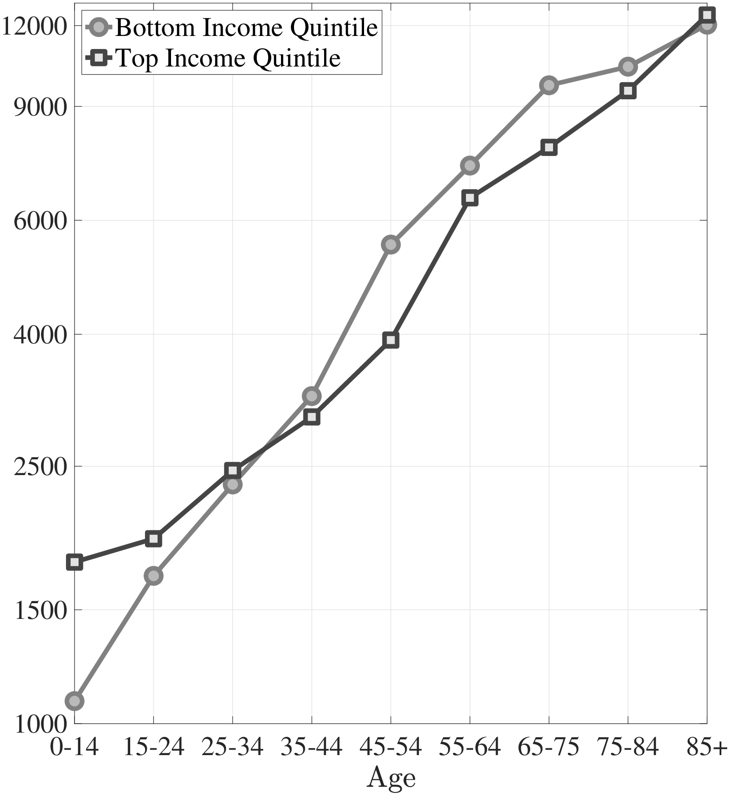
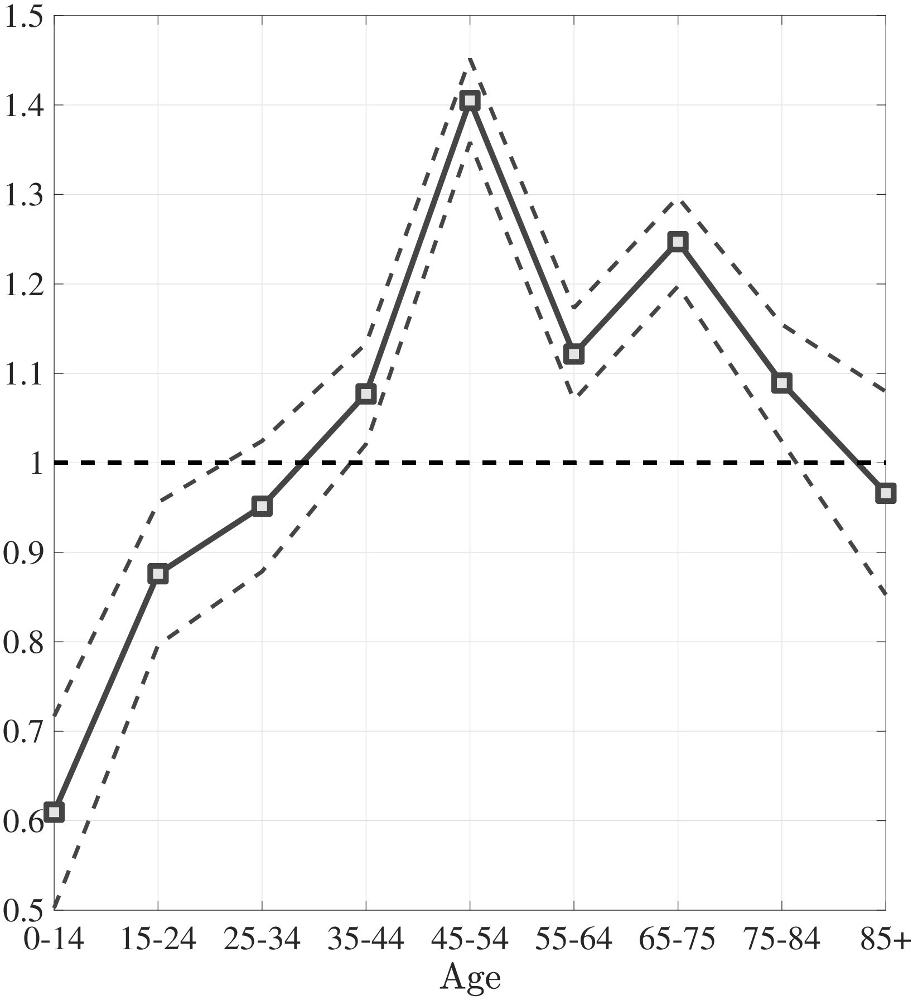
Notes: Left panel shows average medical expenditures in 2010 dollars in log scale for bottom and top income quintiles. Right panel shows ratio of average medical expenditures of bottom to top income quintile along with 95% confidence bands in dashed lines. Standard errors are estimated from 250 bootstrap samples.
The second empirical fact has to do with the differences in the left and right tails of the distribution of healthcare spending between low- and high-income individuals. Figure 2a plots the fraction of individuals in the top- and bottom-income quintiles that have not incurred any medical spending in a given year over the life cycle. For both income groups, young adults are most likely to not utilize any significant health care in a given year. Though, there are again subtle differences between the two income quintiles. A significantly higher fraction of low-income individuals has zero medical expenditures in the data compared to the high-income group, with differences being largest for younger individuals. For example, between ages 25 and 34, more than 30% of the poor do not incur any medical spending in a year, whereas this number is only around 17% for the rich. The differences between income groups shrink among older individuals.
Next, I investigate the differences in the right tail of the medical expenditure distribution by income groups. Figure 2b shows the average of the top 10% medical expenditures. For most of the life span, the right tail of the medical expenditure distribution is also fatter for the poor. The top spenders among low-income individuals incur more extreme expenditures. Between ages 45 and 54, the average of the top 10% medical expenditures is almost one and a half times higher for the poor compared to the rich. Combining these observations, I conclude that low-income individuals are less likely to incur any medical expenditures in a given year, yet, when they do, the amounts are more likely to be extreme.
The third empirical fact regards preventive medicine usage by income groups. As it will be clear in the next section, I interpret “preventive care” as a broader concept than may be commonly understood. My interpretation of preventive care includes all medical goods and services that can mitigate possible future health shocks. Keeping this in mind, in Table 1, I document how frequently low- and high-income individuals use some of the standard forms of preventive care (e.g., dental check-up, colonoscopy, mammogram, etc.).
In the MEPS, for some preventive medicine respondents are asked about the last time they used them (e.g., cholesterol check). For others, they are asked about how often they get them (e.g., dental check-up). I use these variables to construct a uniform measure of how frequently each preventive medicine is used. The larger the figures in Table 1, the more frequently preventive care is used. I find that high-income individuals consume preventive healthcare services and goods significantly more often than low-income individuals. For example, top-income quintile individuals go to a dental check-up roughly twice as often as those in the bottom-quintile group (for more examples of preventive care, see in Appendix A.3.) Other studies also show that high-income individuals consume more preventive care (e.g., Newacheck et al. (1996) and Watson et al. (2001)).
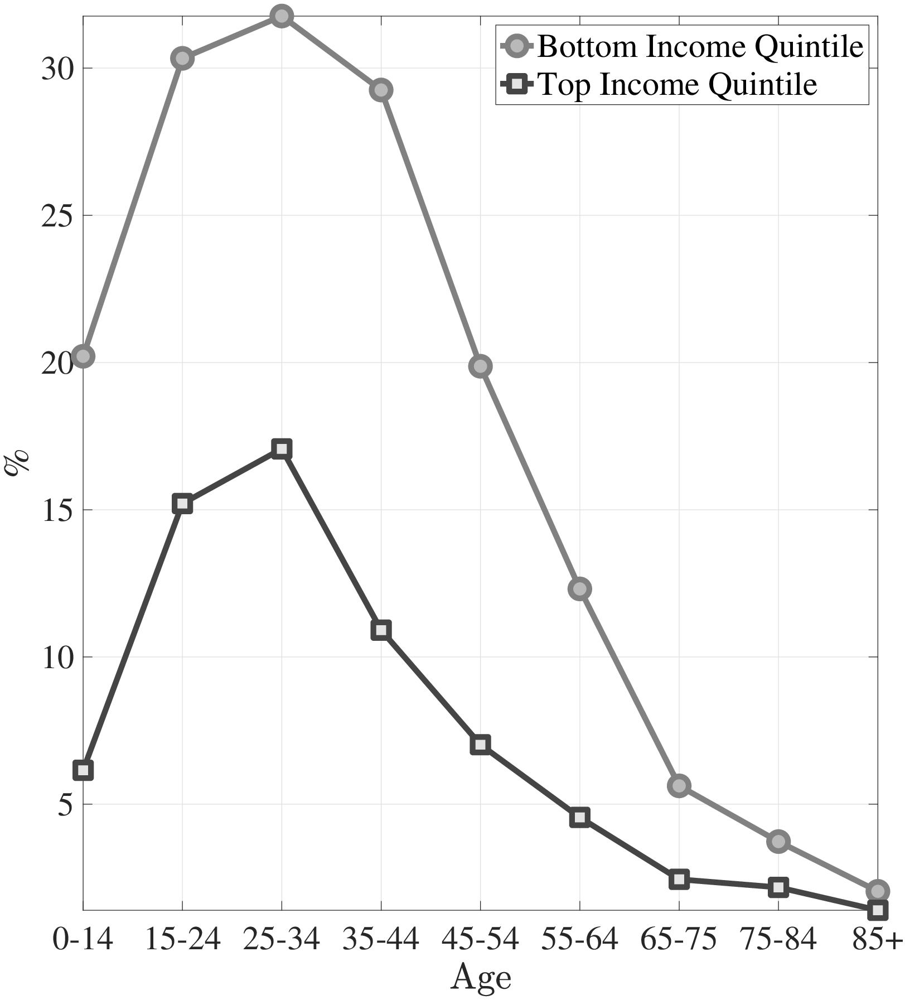
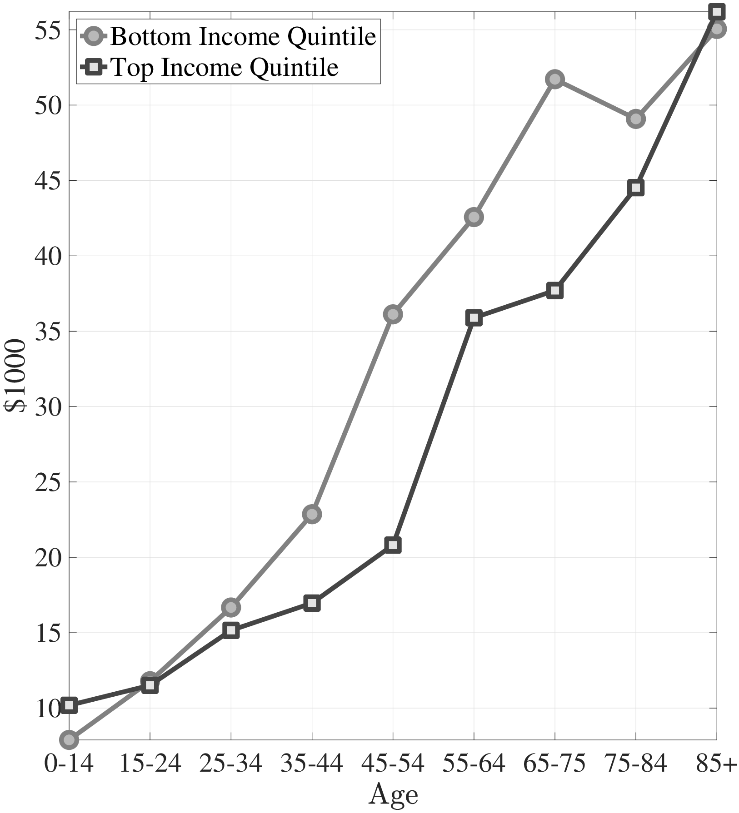
Notes: Left panel shows the fraction of individuals with zero medical expenditures in the MEPS. Right panel shows the average top 10% medical expenditures in 2010 dollars for bottom and top income quintiles.
Last but not least, the large life-expectancy gap between low- and high-income individuals is also well known in the literature (Pijoan-Mas and Rios-Rull (2013); Deaton and Paxson (1999); Attanasio and Emmerson (2003)). For example, using data from the Social Security Agency and the Survey of Income and Program Participation (SIPP), Cristia (2007) has found large differentials in mortality rates across individuals in different quintiles of the lifetime earnings distribution even after controlling for race, marital status, and education. Similarly, Lin et al. (2003) have found that at age 25, individuals from low-income families (with income less than $10,000 in 1980) expect to live almost 8 years less than high-income individuals (with income more than $25,000), which declines as a cohort gets older. Recently, Chetty et al. (2016) use tax records between 1999 and 2014 to estimate race- and ethnicity-adjusted life expectancy at 40 years of age by household income percentile. They find that at age 40, females (males) in bottom-income quintile households expect to live roughly 6 (9) fewer years than those in the top-quintile households.
| Income | Dentist | Cholesterol | Flu Shot | Colonoscopy | Mammogram |
| Quantile | |||||
| Top | 1.47 | 0.71 | 0.47 | 0.25 | 0.65 |
| (0.006) | (0.003) | (0.005) | (0.005) | (0.005) | |
| Bottom | 0.84 | 0.60 | 0.37 | 0.17 | 0.49 |
| (0.005) | (0.003) | (0.003) | (0.004) | (0.004) | |
| # Obs. | 528,751 | 356,483 | 355,620 | 81,244 | 142,961 |
Notes: This table reports the average number of times some forms of preventive care used in a year by income groups. The values in parentheses show the standard errors. The number of observations vary because I dropped inapplicable responds. Source: Author’s calculations from the MEPS.
3 The Physical and Preventive Health Capital Model
In this section I introduce the health capital block of my model, which features two types of health capital (physical and preventive health capital) with endogenous life expectancy. To emphasize these novel features, I keep the rest of the model fairly simple. In particular, I embed this health block into a simple life-cycle model with permanent income differences and public health insurance. Using this environment, I discuss the key mechanism that can account for the differences in the lifetime profiles of medical expenditures between low- and high-income individuals. Then, in Section 4, I enrich this framework by introducing empirically relevant features that are essential for a sound quantitative analysis.
3.1 The Basic Model of Health Capital
The economy is populated by overlapping generations of a continuum of agents. The cohort size of newborns is normalized to \(1\). The agents are subject to health shocks that affect their probability of survival to the next period. They can live up to a maximum age of \(T.\)
Preferences and Endowment.. I assume standard preferences over consumption that are additively separable over time with the current period utility function:
\[ \begin{aligned} u(c) & = & \frac{c^{1-\sigma}}{1-\sigma}, \end{aligned} \]
where \(c\) and \(\sigma\) denote consumption and the constant relative risk aversion coefficient, respectively. For a positive value of life, \(\sigma <1\) must be assumed. With this assumption, individuals value both consumption and a longer lifetime over which consumption can be smoothed. Thus, these preferences introduce a trade off between more consumption per period and a longer lifetime. Also, individuals discount the future at a discount factor, \(\beta\).
Individuals are born as one of two ex-ante types: rich or poor, \(i\in \{rich,\,poor\}\). Each period they are endowed with constant income, \(w^{i}\), depending on their ex-ante type.
Health Technology.. The model features two distinct types of health capital: physical health capital and preventive health capital. Physical health capital determines an individual’s survival probability together with health shocks, whereas preventive health capital governs the distribution of health shocks. Preventive care includes all medical goods and services that can mitigate possible future severe and costly health shocks. To illustrate, the flu shot (or Covid shot) is a form of preventive medicine (an investment in preventive health capital) that basically affects an individual’s probability of getting the influenza virus, whereas getting the influenza virus (or Covid-19 virus) is a physical health shock that affects an individual’s survival probability and depreciates physical health capital if it is not cured. Other examples of preventive medicine are the relatively cheap recommended diabetic services and the effective management of diabetes, which can avoid end-stage renal disease, a health shock that is highly morbid and very costly.
A newborn individual is born with \(1\) unit of physical health capital; i.e., \(h_{0}=1\). Each period she is hit by a health shock, \(\omega _{t}\). In response to these shocks she can invest in physical health capital through a production technology that takes curative medicine as input. Specifically, this technology is given by \(Q_{t}^{C}=A_{t}^{c}m_{C,t}^{\theta _{t}^{c}}\), where \(m_{C,t}\) denotes the curative medicine at age \(t\), and \(A_{t}^{c}\) and \(\theta _{t}^{c}\) denote the productivity and the curvature of the physical health production technology at age \(t\), respectively. She can invest in physical health capital only up to the point of fully recovering from the current shock; i.e., \(m_{C,t}\leq \left (\omega _{t}/A_{t}^{c}\right)^{1/\theta _{t}^{c}}\), therefore health shocks are irreversible unless they are treated in the current period:
\[ \begin{aligned} h_{t+1} & = & \begin{cases} h_{t} & \,\,\,if\hspace{1em}A_{t}^{c}m_{C,t}^{\theta _{t}^{c}}\geq \omega _{t}\\ h_{t}-\omega _{t}+A_{t}^{c}m_{C,t}^{\theta _{t}^{c}} & \,\,\,otherwise \end{cases} \end{aligned} \]
Similarly a newborn is endowed with \(1\) unit of preventive health capital; i.e., \(x_{0}=1\). Each period her preventive health capital depreciates at a constant rate of \(\delta _{x}\). To compensate for depreciation she can invest in preventive health capital through a production technology, which takes preventive medicine as input. Specifically, this technology is defined by \(Q_{t}^{P}=A^{p}m_{P,t}^{\theta ^{p}}\), where \(m_{P,t}\) denotes the preventive medicine at age \(t\), and \(A^{p}\) and \(\theta ^{p}\) denote the productivity and the curvature of the production technology, respectively. In each period she can invest in preventive health capital only up to the point of fully recovering the current depreciation; i.e., \(m_{P,t}\leq \left (\delta _{x}x_{t}/A^{p}\right)^{1/\theta ^{p}}\):77As in the case of physical health capital, depreciation in preventive health capital is irreversible unless it is recovered in the current period.
\[ \begin{aligned} x_{t+1} & = & \begin{cases} x_{t} & \,\,\,if\hspace{1em}A^{p}m_{P,t}^{\theta ^{p}}\geq \delta _{x}x_{t}\\ x_{t}(1-\delta _{x})+A^{p}m_{P,t}^{\theta ^{p}} & \,\,\,otherwise \end{cases} \end{aligned} \]
In any period, the agent draws her health shock from one of the two types of distribution, which differ only in their means. These distributions are assumed to be log-normal with parameters \(\mu _{t}^{j}\) and \(\sigma _{t}^{2}\), where \(j\) denotes the type of distribution. Specifically, health shocks can be drawn from either the “good” distribution, with mean \(\mu _{t}^{G}\) (a distribution of mild shocks) or the “bad” distribution, with mean \(\mu _{t}^{B}\) (a distribution of severe shocks). The probability that an individual draws a health shock from the “good” distribution is determined by preventive health capital, \(x_{t}\):
\[ log(\omega _{t})\sim \begin{cases} \mathbb{N}(\mu _{t}^{G},\sigma _{t}^{2}) & \,\,\,w/p\hspace{1em}x_{t}\\ \mathbb{N}(\mu _{t}^{B},\sigma _{t}^{2}) & \,\,\,w/p\hspace{1em}1-x_{t} \end{cases} \]
The probability of surviving to the next period is a linear function of current physical health capital net of the health shock and is given by \(s(h_{t}-\omega _{t})=h_{t}-\omega _{t}\).88This formulation implies that current investment in physical health capital, \(m_{t}\), does not affect the current survival probability. As I will discuss in Section 5.1, this assumption is needed for identification of physical health production technology parameters. However, under reasonable parametrization individuals choose to recover from health shocks fully for most of the life span. This is because shocks are irreversible, and, if they are not cured in the current period, they cannot be cured in the future. Thus, allowing the survival probability to depend on current curative medicine would not change the results significantly.
Financial Market Structure.. Individuals receive a constant stream of income, \(w^{i}\), depending on their ex-ante type (\(i\in \{rich,\,poor\}\)). They can accumulate assets, \(a\), at a risk-free interest rate, \(r\). They are not allowed to borrow.99The natural borrowing limit in this economy is zero because of endogenous survival probability. To check the role of the borrowing constraint in my results, I studied a case where agents differ in their initial wealth and receive the same small income stream so that they would never need to borrow. The results hold qualitatively and I conclude that the borrowing constraint does not play a key role in my results. The government provides health insurance after age \(T_{O}\), which reimburses medical expenditures according to a coverage scheme with a deductible and co-payments:
\[ \chi (m)=\begin{cases} 0 & \qquad m\leq \iota \\ \varsigma (m-\iota) & \qquad m\geq \iota, \end{cases} \]
where \(m\) denotes the total medical expenditures of the individual, which is the sum of curative medical expenditures, \(m_{C,t}\), and preventive medical expenditures, \(m_{P,t}\). The individual does not receive reimbursement for her medical expenditures up to the deductible, \(\iota\). And for every dollar she spends above the level of the deductible she receives \(\varsigma\) fraction of each dollar spent as the remainder of the co-payment. To finance the health insurance scheme, the government imposes a lump sum tax on individuals, which is denoted by \(\tau ^{L}\). Then the budget constraint for an individual is as follows:
\[ \begin{aligned} w^{i}+(1+r)a_{t} & = & c_{t}+a_{t+1}+m_{C,t}+m_{P,t}+\tau ^{L}\,\,\,\,\,\,t\leq T_{O} \\ w^{i}+(1+r)a_{t} & = & c_{t}+a_{t+1}+m_{C,t}+m_{P,t}-\chi (m_{C,t}+m_{P,t})+\tau ^{L}\,\,\,\,\,\,t\geq T_{O} \end{aligned} \]
3.2 Mechanism
I solve the model computationally and simulate it using the parameter values discussed in Section 5.1. The emphasis in the present section is on the key economic forces at work that can account for the differences between low- and high-income individuals. Therefore, I relegate the details of the parameter values to Section 5.1.
I start by discussing how curative and preventive medical expenditures evolve over the lifetime for both types of individuals. Figure 3a shows the lifetime profiles of average preventive and curative medical expenditures for high- and low-income individuals. Throughout the life cycle, the rich spend substantially more on preventive care compared to the poor, whereas the curative medical spending of the poor exceeds that of the rich. The major trade off in the model is between the amount of consumption per period and the expected life span. Through the distribution of health shocks, life expectancy is mainly determined by the investment in preventive health capital.1010Because shocks are irreversible, the marginal benefit of curative medical expenditures is high enough that both low- and high-income agents choose to recover from health shocks fully for most of the life span. Richer individuals have lower a marginal utility of consumption, therefore, they invest more in preventive care for a longer life expectancy. Thus, as a cohort grows older, lower-income people draw more severe health shocks than higher-income individuals, and in turn they incur higher curative medical expenditures. This explains the increase in the ratio of the medical expenditures of low-income individuals to those of high-income individuals until very old age (Figure 3b).
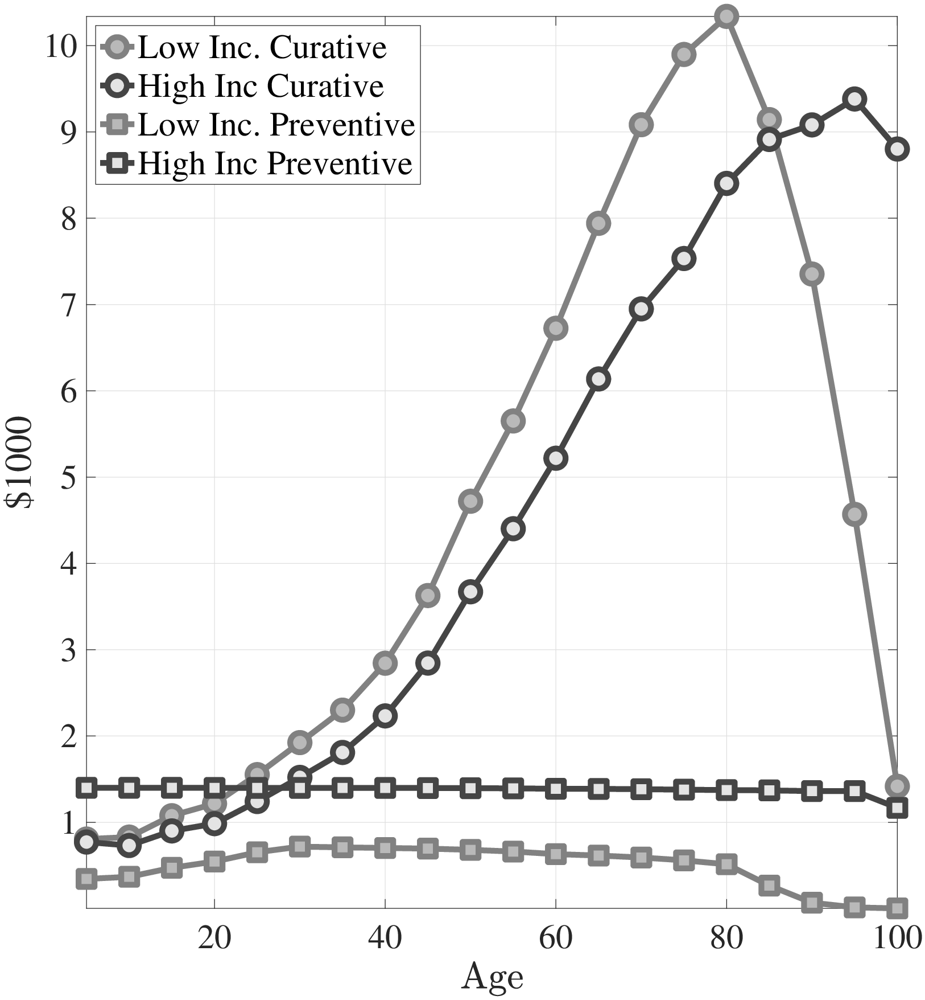
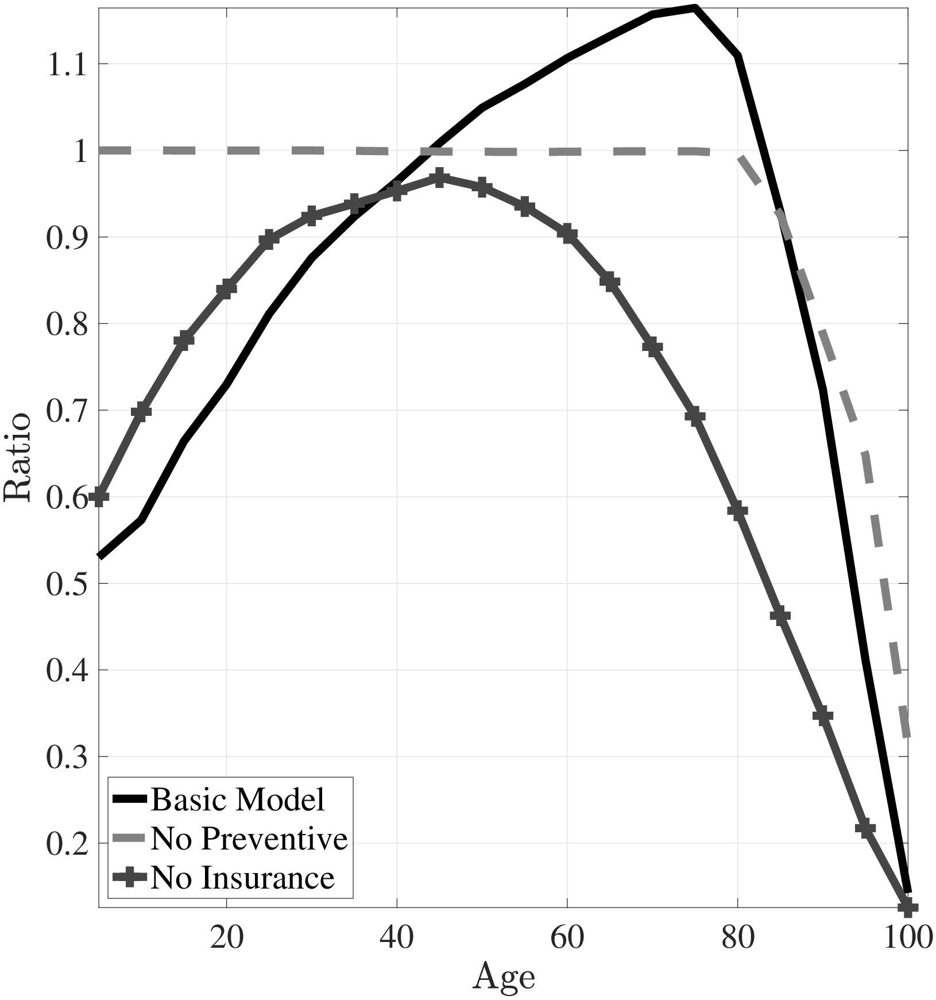
Notes: The left panel shows curative and preventive medical expenditures from model simulated data. The right panel shows the ratio of average medical spending of the poor to the rich.
To make the role of preventive health capital clear, Figure 4a shows the case where I shut down the preventive health capital channel by assuming that the “good” and the “bad” health shock distributions have the same mean (i.e., \(\mu ^{G}=\mu ^{B}\)). If there were only physical health capital and the health shocks of the rich and the poor evolve similarly, then the medical expenditures of low- and high-income individuals would be very similar. As a result, the ratio of the medical expenditures of the poor to those of the rich would be around 1 and broadly decline at older ages (Figure 3b). This result shows the importance of differences in the distributions of health shocks between income groups.
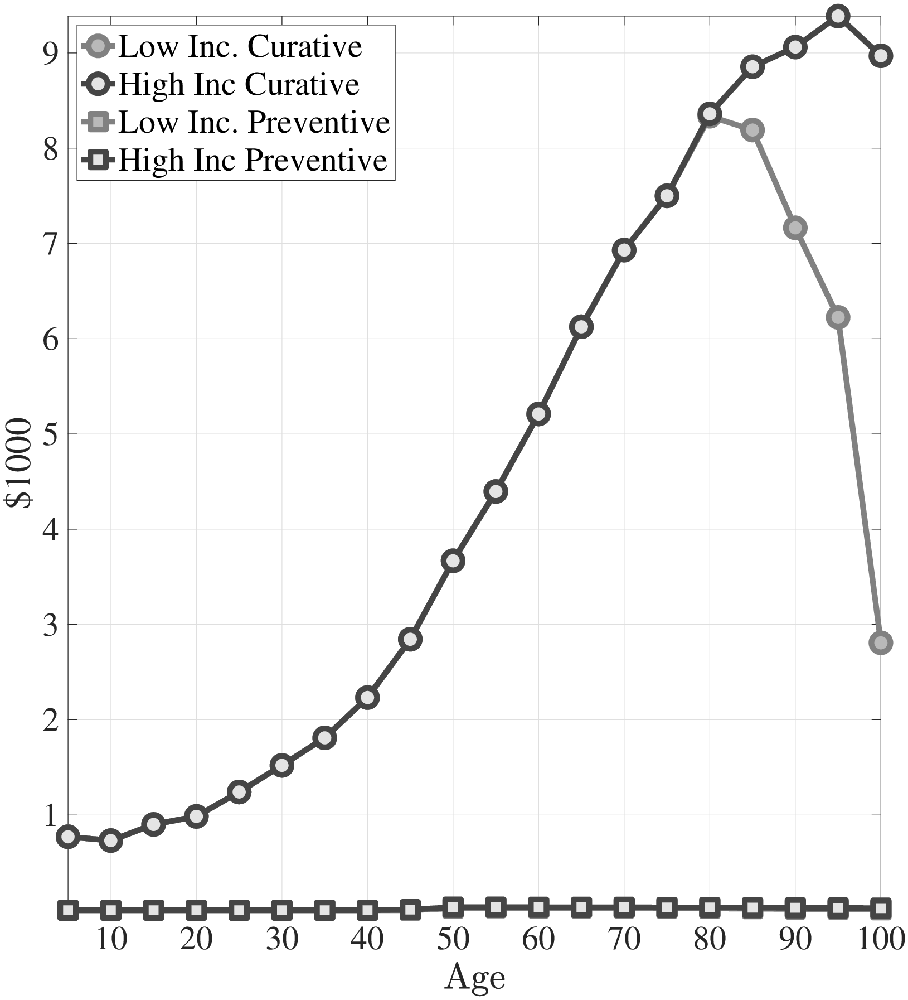
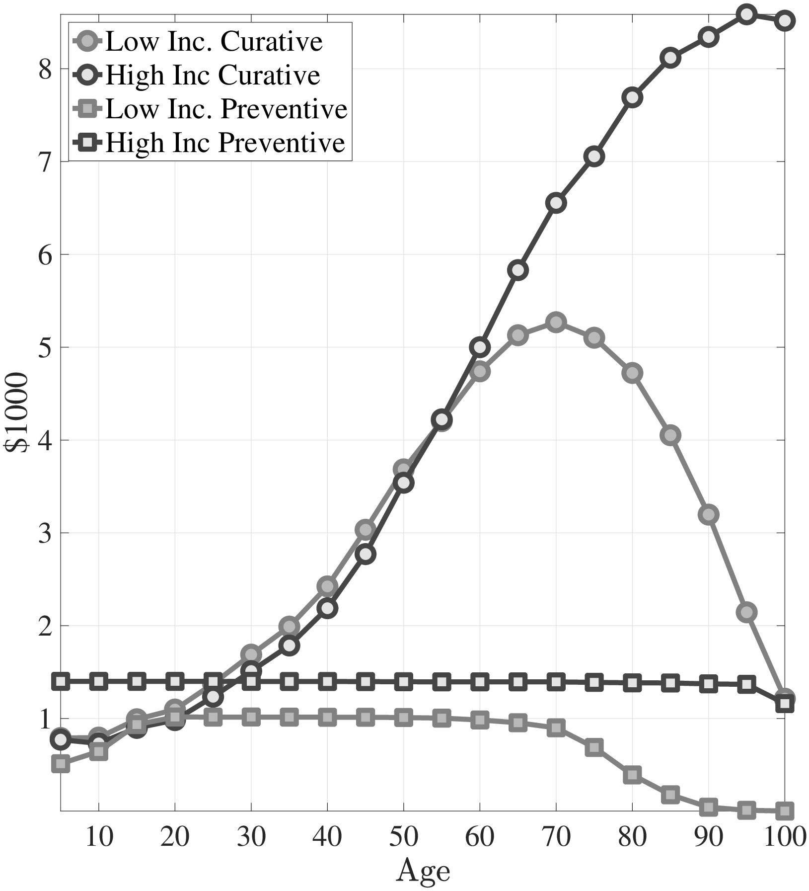
Notes: This figure shows curative and preventive medical expenditures from model simulated data. The left panel corresponds to the case where I shut down differences in distributions of health shocks. In the right panel I show the case for without public insurance.
Of course, why the poor can incur medical expenditures more than the rich (and sometimes more than their resources) is mainly because of the public health insurance. However, public insurance for the elderly affects medical expenditure decisions not only in old age but also early in life. In particular, subsidizing health spending in old age hampers the incentives of the poor to invest in preventive health capital early in life. While insurance covers total medical expenditures (the sum of preventive and curative medical expenditures) the nonlinear (deductible–co-payment) coverage scheme leads to reimbursement of larger medical expenditures at a higher rate, which, in turn, provides less incentives to invest in preventive health capital compared to physical health capital.
In Figure 4b I present the simulation results of the case where there is no public insurance. The poor spend significantly more on preventive medicine early in life compared to the case with public insurance. This leads to milder health shocks for the poor. Furthermore, without public insurance, the medical spending of the poor never exceeds that of the rich (Figure 3b). While I modeled the public insurance as similar to Medicare in this simple model, emergency room examinations for low-income individuals and the provision of Medicaid for the non-elderly poor would have similar implications.
4 Full Quantitative Model
The simple model with two types of health capital and public insurance looks like a promising way to study the differences in the dynamics of medical expenditures by income. But it falls short of delivering a sound quantitative analysis because of the lack of major features of the labor market (i.e., idiosyncratic labor market risk, etc.) and the US healthcare system (i.e., the availability of private health insurance, Medicaid, etc.), all of which can play an important role in the evaluation of counterfactual healthcare policy.
In my quantitative analysis, I keep the law of motions for the physical and preventive health capitals as those given by equations (2)–(4) and extend this basic framework to include above features. In Section 4.1, I discuss individuals’ life-cycle problem. Then, in Section 4.2, I introduce a private health insurance market, the Medicaid, and Medicare. Last, I discuss the government’s budget constraint in Section 4.3.
4.1 The Individual’s Problem
4.1.1 Preferences
Individuals’ preferences over living, consumption, and physical health are ordered according to (à la Hall and Jones (2007)):
\[ \begin{aligned} u(c,h) & = & b+\frac{c^{1-\sigma}}{1-\sigma}+\alpha \frac{h^{1-\gamma}}{1-\gamma}, \end{aligned} \]
where \(b\), \(c\), and \(h\) denote the value of life, consumption, and physical health capital, respectively. Although the general mechanism would work under homothetic preferences (as shown in the basic model in Section 3.1), there are a few advantages to using this type of preferences: First, it allows me to incorporate the value of life explicitly so that agents prefer to live longer not just because they prefer to smooth their consumption over a longer period, but also because an additional year of life allows them to prolong the joy of living. Second, under these preferences the marginal utility of consumption falls rapidly relative to the joy of life, which implies larger differences in the valuation of life between low- and high-income agents than under homothetic preferences. This feature of the preferences comes in handy in the quantitative analysis. Last, these preferences allow me to choose a relative risk aversion coefficient, \(\sigma\), greater than \(1\).
I also assume that individuals enjoy the quality of their lives, where \(\alpha\) and \(\gamma\) represent quality-of-life parameters. There are situations where health and consumption are complements (e.g., the marginal utility of a fine meal is lower for diabetics) and other situations where they are substitutes (e.g., the marginal utility of hiring a maid is higher for a sick person). Thus, I choose the intermediate case and assume that health and consumption are separable (Hall and Jones (2007), Yogo (2007)).
4.1.2 Three Phases of the Life Cycle
Individuals live through three phases of the life cycle, each of which has unique features. They are born into families of different income levels and stay with their parents until age \(T_{ADULT}\). Then they join the labor force and earn an idiosyncratic labor income until age \(T_{RET}.\) Finally, they retire and receive a retirement pension from the government proportional to their last period’s labor income. Throughout their lifetime, they are subject to an endogenous death probability, and by the end of age \(T\), everyone dies with certainty. I now discuss the three phases of the life cycle in detail.
Childhood Years.. Individuals are born into families that are heterogeneous in family income. Throughout childhood they receive a constant stream of income, \(w^{i}\), from their parents. I do not model the parent-child interaction explicitly (which would unnecessarily complicate the model further). Rather, I assume that, each period, parents spend the same constant amount of money on behalf of and for the welfare of their children.
Parents are offered a private health insurance contract for their children. If they choose to buy insurance, they pay a premium of \(p_{t}^{PRV}\) and they receive reimbursement from the insurance firm for their medical expenditures according to health insurance coverage function \(\chi ^{PRV}(m)\), where \(m\) is total medical expenditures. If their income is lower than a certain poverty threshold, they are eligible for Medicaid, \(\chi ^{MCD}(m)\), which is a government-financed health insurance contract. The details of the private and Medicaid health insurance contracts will be discussed in Section 4.2. I assume that there is no cost of enrolling in Medicaid; thus, once they are eligible, parents choose to enroll their children in this program.1111It is well known in the literature that some people do not enroll in Medicaid, although they are eligible (e.g., Aizer (2003)). I abstract from this feature in my model.
As most young adults start their working life with little to no assets (e.g., Hubmer et al. (2024)), I assume that children do not accumulate assets throughout this phase. They (or their parents on their behalf) buy consumption, \(c_{t}\); curative medicine, \(m_{C,t}\); preventive medicine, \(m_{P,t}\); and private health insurance from their income.
Working Years.. After age \(T_{ADULT}\) individuals join the labor force and inelastically supply labor hours. Their idiosyncratic labor productivity, \(w_{t}^{i}\), follows an \(AR(1)\) process. In addition, an individual’s physical health status in the current period, \(h_{t}-\omega _{t}\), affects her labor earnings. Specifically, her labor earnings at age \(t\) are equal to \(w_{t}^{i}(1-(1-(h_{t}^{i}-\omega _{t}^{i}))\zeta)\), where \(\zeta\) determines the decline in earnings due to deterioration in health status. The government taxes total income of adults according to a progressive tax function \(\tau (.)\).
Individuals in their working years are also offered private health insurance. They can buy insurance by paying an age-specific insurance premium, \(p_{t}^{PRV}\). In the US, poverty alone does not necessarily qualify an adult for Medicaid.1212Medicaid is provided by states; therefore, its eligibility varies across states. Some of the groups eligible for Medicaid are individuals who qualify for Aid to Families with Dependent Children (AFDC), pregnant women with income lower than some certain poverty threshold, children under age 19, recipients of SSI, and recipients of foster care. Thus I assume that adults are not eligible for Medicaid. Since more than 85% of private insurance is provided through employers (Mills (2000)), I assume that the health insurance premium is tax deductible.
Financial markets are incomplete in that adults (both workers and retirees) can only accumulate a risk-free asset, \(a_{t}\), with an interest rate, \(r\), against idiosyncratic labor market risk and idiosyncratic health risk. Furthermore, in this model the natural borrowing limit is zero because of endogenous survival probability, therefore, individuals are not allowed to borrow. Finally, I assume that the assets of the deceased households are fully depreciated.
Retirement Years.. Individuals retire at age \(T_{RET}\) and start receiving constant pension payments from the government as a function of their last-period earnings, \(\Phi (w_{T_{RET}}^{i})\). They die by the end of age \(T\) with certainty. All of the elderly are covered by Medicare, which is a government-financed health insurance contract that reimburses medical expenditures according to insurance coverage function \(\chi ^{MCR}(m)\).
4.2 Health Insurance Plans
Individuals are offered different health insurance plans during different phases of their lifetime. During childhood and their working years they are offered private health insurance. If they are poor during childhood, they are covered by Medicaid. All of the elderly are covered by Medicare.
Individuals are not allowed to buy private health insurance after they observe the health shock in each period. One way to interpret this condition is that private insurance firms can discriminate against patients with pre-existing health conditions. Another way to interpret it is that shocks are observable by private insurance firms, and, due to operational costs, the price firms ask for after a shock is higher than the individual’s willingness to pay.
All three types of insurance plans reimburse medical expenditures according to a deductible and co-payment coverage scheme, as introduced by Equation 5. Each insurance type, \(j\in \left \{PRV,\,MCD,\,MCR\right \}\) (private, Medicaid, and Medicare, respectively), has its own coverage scheme \((\varsigma ^{j},\iota ^{j})\), which is determined exogenously.
Premiums for private insurance depend only on age so that everybody at age \(t\) pays the same insurance premium, \(p_{t}^{PRV}\), regardless of their physical health capital, \(h_{t}^{i}\), preventive health capital, \(x_{t}^{i}\), income, \(w_{t}^{i}\), and asset holdings, \(a_{t}^{i}\). So there is cross-subsidization between the healthy and the unhealthy.1313In reality there is also cross-subsidization between the young and the old, which I abstract in my model. The private health insurance market consists of many small firms. Insurance premiums are determined competitively through firms’ zero-profit condition. A firm’s revenue in the age \(t\) sub-market is composed of insurance premiums collected from customers. The costs of the firm include both the financial losses due to medical expenditures and operational costs (overhead costs), which are proportional to financial losses; specifically, \(\Delta\) fraction of financial losses. Since there is free entry, in equilibrium, revenues pay out costs in each sub-market \(t\). Specifically, the age-dependent private health insurance plan price satisfies firms’ zero-profit condition: {{t}}I_{t}^{PRV}({t}){{t}}d{t}({t},{t})=0,,,t, where \(\mathbb{S}_{t}=(h_{t},x_{t},a_{t},w_{t})\). \(I_{t}^{PRV}(\mathbb{S}_{t})\) and \(m_{t}(\mathbb{S}_{t},\omega _{t})\) denote individual’s private health insurance and medical expenditure decisions (which I define in Section 4.4), respectively. Also, \(\Lambda _{t}(\mathbb{S}_{t},\omega _{t})\) defines the measure of individuals at age \(t\) over state variables in the equilibrium.
Default Option.. Health shocks are among the major reasons for bankruptcies (Himmelstein et al. (2009)). Therefore, I allow individuals in my model to default in the case of a severe health shock if they do not have sufficient resources to fully recover from the shock.1414Default option also captures emergency room examinations for low-income individuals and the provision of means-tested Medicaid to medically needy adults (De Nardi et al. (2011)). If an individual chooses to default she spends all of her resources on curative medicine up to the consumption floor, \(c_{min}\), and the rest of the curative medical expense for fully recovering from her health shock is covered by the government. Therefore she can neither buy preventive medicine nor save for the next period. In future periods, she can accumulate assets and invest in preventive health capital.
4.3 The Tax System and the Government Budget
The government imposes a progressive income tax, \(\tau (.)\). The collected revenues are used to (i) finance the Social Security system, (ii) finance the medical expenditures due to Medicaid, Medicare and default, and (iii) finance the government expenditure, \(G\), that does not yield any direct utility to consumers. The residual budget surplus or deficit, \(Tr\), is distributed in a lump-sum fashion to individuals regardless of age.
4.4 The Individual’s Dynamic Program
Let \(I^{D}\) be an indicator variable for default choice. Similarly, \(I^{j}\) is an indicator variable for the insurance coverage of type-\(j\), where \(j\in \{PRV,\,MCD,\,MCR\}\). The dynamic program of a typical individual with idiosyncratic state \(\mathbb{S}_{t}=(h_{t},x_{t},a_{t},w_{t})\) is given by:
V_{t}({t}) = {{t}}} ]\ (2),,,(3),,,,,(4)\ I{t}^{MCD} = {{tT{ADULT},,,,w_{t}}}\ I_{t}^{MCR} = {{t>T{RET}}}\ _{t} = \[\begin{cases} w_{t}(1-(1-(h_{t}-\omega _{t}))\zeta)+ra_{t}-p_{t}^{PRV}I_{t}^{PRV} \,\,\,T_{ADULT}<t\leq T_{RET}\\ w_{t}+ra_{t}-p_{t}^{PRV}I_{t}^{PRV} \,\,\,t>T_{RET} \end{cases}\] \ y_{t} = \[\begin{cases} w_{t}-p_{t}^{PRV}I_{t}^{PRV} \,\,\,t\leq T_{ADULT}\\ (1-\tau (\tilde{y}_{t}))(\tilde{y}_{t}) \,\,\,t>T_{ADULT} \end{cases}\] \ (1-I_{t}^{D})y_{t} = (1-I_{t}^{D})(-a_{t}+a_{t+1}+c_{t}+m_{C,t}+m_{P,t}-{j}I{t}^{j}^{j}(m_{C,t}+m_{P,t})+Tr)\ I_{t}^{D}m_{C,t} = I_{t}^{D}({t}/A{t}{c}){(1/{t}{c})},,,I_{t}{D}c{t}=I_{t}{D}c_{min},,,I_{t}{D}a_{t+1}=0,,,I_{t}^{D}m_{P,t}=0\ a_{t+1} = 0,,,,,,,,,,,,tT_{ADULT}\ w_{t} = \[\begin{cases} \bar{w} \,\,\,t\leq T_{ADULT}\\ \rho w_{t-1}+\eta _{t},\,\,\eta _{t}\sim N(0,\sigma _{\eta}^{2}) \,\,\,T_{ADULT}<t\leq T_{RET}\,\,\,\,\,\,\,\,\,\,\,\,\,\,\,\,\,\,\,\,\,\,\,\,\,\,\,\,\,\,\,\,\,\,\,\,\,\,\\ \Phi (w_{T_{RET}}) \,\,\,t>T_{RET} \end{cases}\]See Appendix B for the equilibrium definition.
5 Quantitative Analysis
In this section, I begin by discussing the parameter choices for the model. Then, in Section 5.2, I present simulation results and compare them with their empirical counterparts to evaluate the model’s performance in fitting the salient features of the data.
5.1 Estimation
I calibrate the model parameters in two steps. First, I fix some parameters exogenously outside of the model (e.g., labor income process, insurance coverage schemes, etc.). Second, I estimate the remaining parameters internally by targeting a set of moments from the MEPS (e.g., distribution of health shocks, physical and preventive health production technology parameters, etc.).
5.1.1 Exogenously Set Parameters
Demographics.. The model period is one year. Individuals enter the labor market at age 21 (\(T_{ADULT}=20\)). Workers retire at age \(T_{RET}=65\) and die with certainty at age \(T=110\).
CRRA Coefficient.. De Nardi et al. (2010) estimate the constant relative risk aversion coefficient in a structural model with uncertain medical expenditures. I follow them and set the constant relative risk aversion coefficient \(\sigma =3\), which is somewhat higher than usually assumed in the literature. Simulation results are also robust to \(\sigma =2\).
Interest Rate.. Interest rate, \(r\), is exogenously set to \(2.5\%\) in partial equilibrium.
Income Process.. I calibrate the common deterministic age profile for income using the MEPS data.1515I use the normalized family income to calibrate the deterministic component. There is little change in average (normalized) family income throughout childhood. Thus, I assume that children receive a constant (but idiosyncratic) stream of income. During adulthood, labor income increases by 60% up to age 45 and then decreases by 25% by the age of retirement. This hump-shaped profile is in line with other estimates in the literature. Income during retirement is determined by the government pension function \(\Phi ()\). For the stochastic component of the income process, three parameters are required. The first is the variance of individual-specific fixed effects, \(\sigma _{\alpha}^{2}\), which determines the cross-sectional variation in income among children and the variation in initial conditions in the labor market. The other two parameters are the persistence, \(\rho\), and the variance, \(\sigma _{\eta}^{2}\), of persistent shocks. The MEPS has a very short panel dimension that, practically speaking, does not allow me to estimate these parameters. Thus, I use the estimated values of these parameters from Storesletten et al. (2000) since they estimate an \(AR(1)\) income process using household income data, which is the measure of income in my empirical analysis.
Last, using the MEPS data I estimate the decrease in labor earnings due to deterioration in physical health status (\(\zeta\)). Exploiting the (short) panel dimension of the survey, I control for the individual fixed effects and estimate the effect of within person health status changes—which is measured by subjective evaluation of the respondent—on labor earnings (see Appendix A.4 for details). I find that labor earnings change around 44% between the best and worst health status. In the model, physical health status \(h_{t}\) varies between 0 and 1.1616De Nardi et al. (2017) also show that workers with poor health earn about 45 log points less compared with those in good health in the PSID. Therefore, I set \(\zeta =0.44\), which implies that earnings of an individual with physical health capital \(h_{t}\) after an health shock \(\omega _{t}\) is given by \(w_{t}(1-(1-(h_{t}-\omega _{t}))\zeta)\).
Social Security Benefits and Tax Schedule.. In a realistic model of the retirement system, a pension would be a function of lifetime average earnings, but this would require me to incorporate average earnings as an additional continuous state variable to the individual’s problem. Instead, the retirement pension is modeled as a function of predicted lifetime earnings. I first regress lifetime earnings on the last period’s earnings and use the coefficients to predict an individual’s lifetime earnings, denoted by \(\hat{y}_{LT}(w_{T_{RET}})\) (see Karahan and Ozkan (2013) for details). Like Guvenen et al. (2014) I use the following pension schedule: ({LT}(w{T_{RET}}))=aAE+b{LT}(w{T_{RET}}) where \(AE\) is the average earnings in the population. I set \(a=16.8\%\) and \(b=35.46\%\). I also use the progressive tax schedule estimated by Guvenen et al. (2014).
Consumption Floor.. Hubbard et al. (1994) estimate the statutory consumption floor for a representative adult considering SSI benefits, housing subsidies, and food stamps and find it to be $7000 (in 1984). However, in a recent paper De Nardi et al. (2010) estimate the effective consumption floor in a setting with uncertain out-of-pocket medical expenditures for the elderly and find it to be much smaller ($2700 in 1998). I follow an intermediate path between these two papers and set the consumption floor at $5000 per year.
Poverty Threshold.. Since the unit of interest in my model is an individual, I use the federal poverty threshold for a single adult in 2006, which is $10488.
Insurance Coverage Schemes.. I use the MEPS data to estimate the insurance coverage schemes, \(\chi ^{j}(m)\). In the MEPS, in addition to total medical expenditures, variables that itemize expenditures according to the major source-of-payment categories are also available. Thus, I can identify how much of the total expenditure is paid by the individual herself, by the private insurance firm, by Medicaid or Medicare, and by other sources. Then, using this information, I estimate equation (5) for private insurance holders and Medicare holders. The details of the estimation are presented in Appendix A.5.
I assume that the Medicaid coverage scheme is the same as the private coverage function. Because in the data Medicaid holders incur medical expenditures mostly in the case of severe health shocks, I cannot estimate the coverage function for small values of medical expenditures. Moreover, in many states Medicaid is provided through private insurance companies, which makes my assumption reasonable. In the model children 6 years old and younger with income lower than 133% of the poverty threshold and those between ages 7 and 20 with income lower than 100% of the poverty threshold are eligible for Medicaid.1717Health Care Financing Administration (2000) explains in detail the groups of populations that states are required to provide Medicaid and other population groups that states may choose to cover. My calibration captures the groups all states must provide Medicaid coverage.
5.1.2 Estimated Parameters
The remaining parameters are calibrated internally within my model by matching moments from the data that are sufficient to identify all the parameters. Therefore, all parameters are determined jointly as most parameters affect more than one aspect of the data. In the following paragraphs, however, I discuss which moments help me pin down which parameters. In particular, I informally argue that each of the parameters has a significant effect on at least one unique subset of the moments and give some intuition as to why this is the case. This approach should be convincing, since it provides an understanding of how the moments are sufficient to pin down the parameters.1818See Ozkan et al. (2023); Kaplan (2012) for a similar strategy of identification argument.
Preference Parameters.. As common in the literature, the discount factor \(\beta\) is estimated by matching an aggregate wealth to aggregate labor income ratio of 3.
The value of living, \(b\), is identified from the average life expectancy in the population (75 years), particularly, life expectancy of those below median income.1919Under the current calibration, for the rich, the marginal benefit of investing in health is larger than the marginal utility of consumption, therefore, their optimal medical spending is maxed out at the corner solution. Small changes around the estimated value of \(b\) would not change their medical spending behavior, or consequently, their life expectancy. The larger \(b\) is, the longer the life expectancy individuals aim for.
To identify \((\alpha,\gamma)\), that determine the utility from quality of health, I follow Hall and Jones (2007) and draw upon the literature on quality-adjusted life years (QALYs). This literature compares the flow utility level of a person with a particular disease with that of a person in perfect health and estimates QALY weights by age (Cutler and Richardson (1997)). I then use these weights to estimate \(\alpha\) and \(\gamma\):
== where \(\bar{c_{t}}\) and \(\bar{h}_{t}\) denote the average consumption and physical health capital net of health shocks and 0.94, 0.73, and 0.62 are the QALY weights at age 20, 65, and 85, respectively.2020In Hall and Jones (2007) people of all ages have the same consumption at each point in time, therefore in their flow utility calculation consumption at each age is set to be same.
My framework have implications for value of statistical life (VSL), which refers to the monetary value of preventing one statistical death. The empirical literature on the VSL encompasses a wide range of values, from a low of about $1.7 million to highs of $25 million or more in 2010 dollars (see Viscusi (1993)). Following Hall and Jones (2007) and De Nardi et al. (2017), in my framework for an individual with idiosyncratic state \(\mathbb{S}_{t}\) I define \(VSL_{t}(\mathbb{S}_{t})=\frac{\mathbb{E}V_{t+1}(\mathbb{S}_{t+1}\mid \mathbb{S}_{t})}{u_{c}(c_{t})}\), where \(u_{c}\) is the marginal utility of consumption. In the estimated model, for the working age population the median VSL is $3.47 million (in 2010 dollars), which is somewhat at the lower end of the estimates. However, the VSL distribution is very dispersed and right skewed with an average of $13.7 million (which is still within the range of empirical estimates).
Distribution of Health Shocks.. I normalize the initial level of physical health capital to 1. At each age \(t\) there are three parameters for the distribution of the log of health shocks: the means of the “good” and “bad” distributions of log health shocks \((\mu _{t}^{G},\mu _{t}^{B})\) and the common standard deviation of the distributions, \(\sigma _{t}^{2}\). I assume that the difference between the means of the “good” and “bad” distributions is constant for each age \(t\); i.e., \(\mu _{t}^{B}=\mu _{t}^{G}+\bar{\mu}\). So, there are two parameters in each \(t\), the means and the variances of the “good” distributions \((\mu _{t}^{G},\sigma _{t}^{2})\), and a common \(\bar{\mu}\). Recall that the survival probability is a function of both the current physical health capital, \(h_{t}\), and the health shock, \(\omega _{t}\). Thus, the distribution of health shocks at age \(t\) affects the conditional probability of survival to \(t+1\). I estimate two parameters at each age \((\mu _{t}^{G},\sigma _{t}^{2})\) by exploiting the following two moment conditions. First, I normalize the support of the distribution such that health shocks are smaller than 1 (which is the worst shock, implying death with certainty). In particular, I fix the 99.999th percentile of the distribution to 1. Second, I match the average conditional survival probability in each \(t\).2121Because the health shocks are log-normally distributed (i.e., \(log(\omega _{t})\sim \mathbb{N}(\mu _{t}^{G},\sigma _{t}^{2})\)) the mean of health shocks \(\omega _{t}\) equals to \(e^{\mu _{t}^{G}+\frac{\sigma _{t}^{2}}{2}}\), thereby survival probability depending on the variance of shocks \(\sigma _{t}^{2}\) as well. These two moment conditions help me to estimate \((\mu _{t}^{G},\sigma _{t}^{2})\) in each \(t\). Finally, I use differences in the lifetime profile of medical expenditures between low- and high-income individuals to identify the difference in means of the distributions, \(\bar{\mu,}\) along with preventive health capital technology parameters, \((A^{p},\theta ^{p})\), which I discuss next.
Preventive Health Production Technology.. I normalize the initial level of preventive health capital to 1. The difference between the means of the “good” and the “bad” distributions of health shocks (\(\bar{\mu}\)) and the depreciation in preventive health capital (\(\delta _{x}\)) cannot be identified jointly. Thus, I assume that \(\delta _{x}=7.5\%\).2222I have experimented with different values of \(\delta _{x}\); my results are not sensitive to parameter. There are also two age-invariant parameters of preventive health production technology, the productivity and curvature parameters \((A^{p},\theta ^{p})\). So, I need three unique sets of moments that have a strong effect on \(\bar{\mu}\), \(A^{p}\), and \(\theta ^{p}\) to have these parameters estimated. Recall from the mechanism discussion in Section 3 that without preventive care expenditures—which are motivated by differences between and “good” and the “bad” health shock distributions—the ratio of the medical expenditures of the poor to those of the rich exhibits a non-increasing profile over the life cycle. Therefore, in my estimation, I exploit differences in medical spending between income groups to inform on these parameters.
The first two moments come from the ratio of the healthcare spending of the bottom income quintile to that of the top income quintile early in life and in old age (Figure 1b). First, early in life medical expenditures of the poor are substantially lower than those of the rich mainly because of differences in preventive care expenditures. Thus, there must be enough differences in the model between low- and high-income groups in preventive medicine usage to match the counterpart in the data. Next, in old age the model generates an increase in the poor’s medical expenditures to those of the rich through a rise in the differences between their curative medical expenditures. Thus, preventive medical expenditures should be small enough that the increase in differences in \(m_{C,t}\) can surpass the differences in \(m_{P,t}\).
Third, I exploit the differences in medical spending of the median households relative to the top income quintile. Figure C.8a shows the ratio of average medical spending between these income groups. Differences between median and top income quintiles are very muted relative to those between the poor and the rich (Figure 1b). This additional set of moments is particularly informative about the curvature parameter of the preventive heath production function, \(\theta _{p}\) as it governs the convexity of the preventive cost function, which is one of the key determinants of differences in investment between income groups. The estimated model can capture this feature of the data well.
Physical Health Production Technology.. I use the distribution of medical expenditures within 5-year age bins in the data to identify the productivity, \(A_{t}^{c}\), and curvature, \(\theta _{t}^{c}\), parameters of the physical health production function. While, I do not observe curative and preventive medical expenditures separately in the data, I use my model to measure each of type of medical expenditures. I describe above how I identify the distribution of preventive medicine expenditures. With preventive expenses on hand, I can then measure the curative medical expenditures. Assuming that individuals choose to fully cure health shocks, there is a one-to-one relationship between the distribution of shocks and the distribution of curative medical expenditures in the data through the physical health production function (equation 8).2323For reasonable parameter values, individuals indeed choose to fully recover from health shocks throughout their lifetime except in very old age (older than 90). This is because, as I discussed above, shocks are irreversible unless they are treated in the current period. Thus, the mean and variance of the distribution of medical expenditure shocks identify the parameters \((A_{t}^{c},\theta _{t}^{c})\).
\[ \begin{aligned} \omega _{t} & = & A_{t}^{c}m_{C,t}^{\theta _{t}^{c}}\\ \log \omega _{t} & = & \log A_{t}^{c}+\theta _{t}^{c}\log m_{C,t} \\ \log m_{C,t} & = & \frac{\log \omega _{t}-\log A_{t}^{c}}{\theta _{t}^{c}} \end{aligned} \]
Equation 8 shows that both the distribution of health shocks (which are identified from another set of moments) and the physical health production function determine the distribution of curative medical expenditures. Then, what generates the sharp increase in medical spending with age (Figure 1a)? Do health shocks grow larger or health production function becomes less efficient? To investigate these questions I simulate medical expenditures (for the same set of random variables) under two counterfactual cases: First, I fix the distribution of health shocks to that of 40-year-olds and let the health production parameters vary over the life cycle. Second, I fix the health production function to that of 40-year-olds and let the distribution of health shocks vary by age.2424Since our goal is to understand the role of distribution of health shocks and health production function, I assume that health shocks are fully treated, i.e., \(\omega _{t}=A_{t}^{c}m_{C,t}^{\theta _{t}^{c}}\). I find that that the sharp increase in medical spending with age after age 40 is mainly driven by larger health shocks but not less efficient health production technology (Figure C.7).
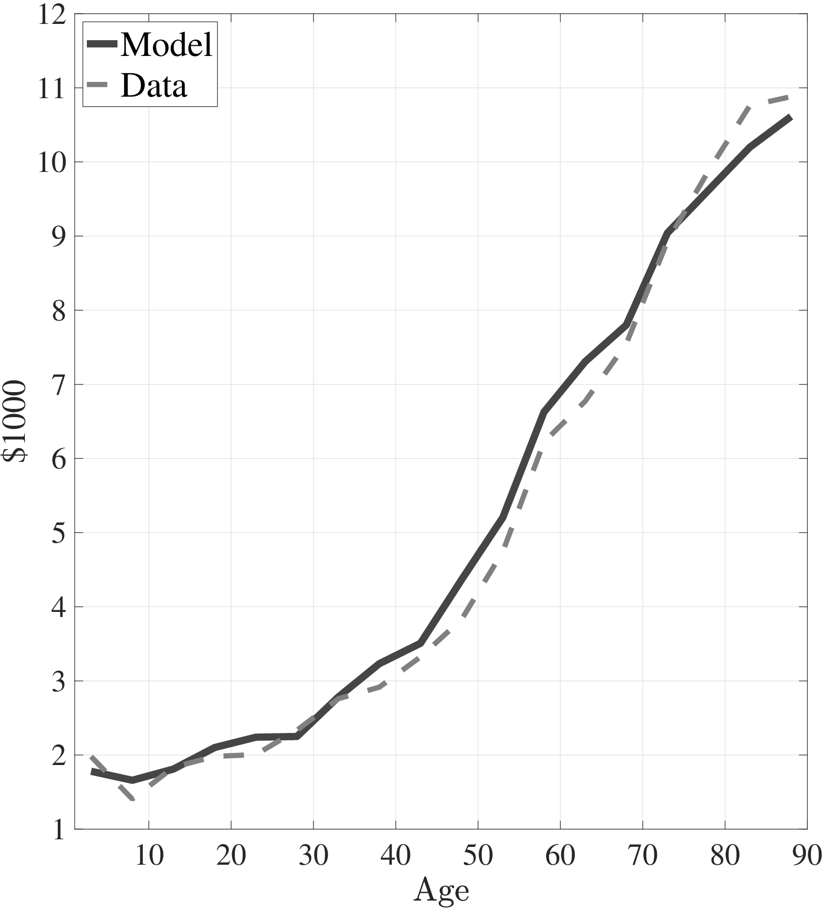
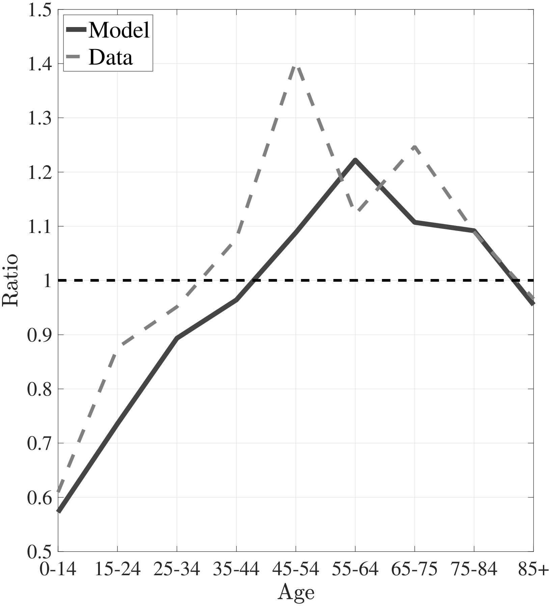
Notes: Left panel shows average medical expenditures in 2010 dollars for model simulated data along with empirical counterpart from the MEPS. The right panel shows the ratio of average medical expenditures of bottom- to top-income quintile groups for model simulated data along with empirical counterpart.
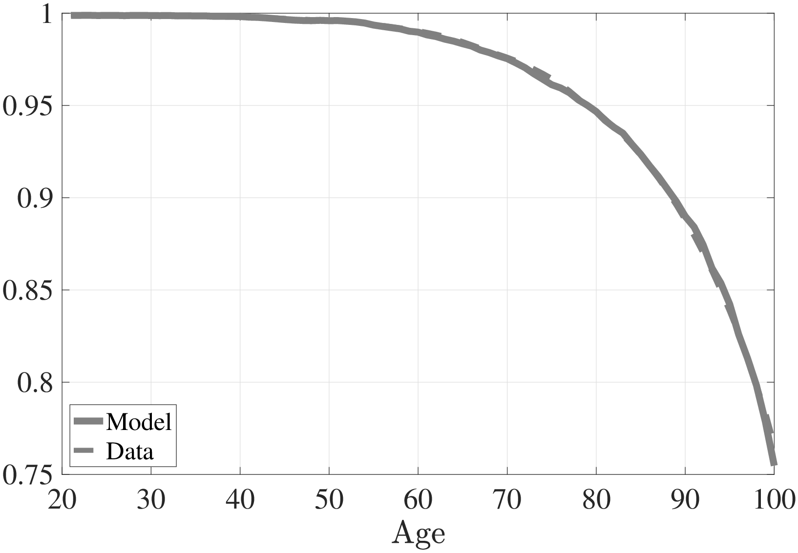
Notes: This figure shows the conditional survival probability to the next age for model simulated data along with empirical counterpart from the SSA’s life tables.
5.2 Model Performance
In this section, I examine the fit of the model to the targeted moments in the estimation as well as the untargeted ones. The estimated parameter values are shown in Tables C.8, C.9, and C.10 (Appendix C).
5.2.1 Fit of the Model to the Targeted Moments
Figure 5a plots the average medical expenditures from simulated life-cycle paths and the data counterpart. Figure 5b shows the simulated ratio of the medical expenditures of low-income individuals to those of high-income individuals and its data counterpart. Average medical expenditures over the life cycle (along with the variances) and the increase in the relative expenditures of low- to high-income individuals are targeted in my estimation. The model is able to account for these features of the data, particularly the dramatic increase in medical expenses and the ratio of the expenditures of the poor to those of the rich.
Figure 6 shows the age profile of conditional survival probability implied by the model and its data counterpart, which is targeted in the estimation. Except for very old age, the model is able to endogenously generate an age profile of conditional survival probability that is very close to the data. Next, I turn to mortality differences between low- and high-income individuals. For this purpose I compute the life expectancies of both income groups at ages 25, 45, and 65. The results are shown in Table 2 along with their corresponding values in the data. Notice that the model is able to endogenously generate a decreasing life expectancy differential between low- and high-income individuals, albeit not as large a difference as that observed in the data. At age 25, there is a difference of almost 8 years in the life expectancies of the rich and the poor observed in the data, whereas the model generates only 5 years. Of course, my model does not feature all the possible mechanisms that may lead to a life-expectancy gap (e.g., genetic factors, healthier lifestyle choices, etc.), therefore, we should not expect it to explain the entire gap.
5.2.2 An Informal Validation Discussion
So far, I have presented the fit of the model to the moments used in the estimation. Now, I present an informal validation test of the model by showing its performance in fitting the untargeted moments.
In my estimation I target only the increase in the ratio of the medical expenditures of low-income individuals to those of high-income individuals but not the decrease at the end of the life cycle (Figure 5b). The model can capture this decrease fairly well. First, a selection effect plays an important role at the end of life. As a cohort of individuals grows older, it becomes increasingly composed of the rich; therefore, the difference between the rich and poor decreases (Shorrocks (1975)). Second, the return on health capital investment is lower for low-income individuals since they expect to live shorter lives. This reduces the medical spending of the poor relative to the rich.
| Low Income High Income | ||||
| Life Expectancy | Data | Model | Data | Model |
| Age 25 | 45.0 | 48.5 | 52.9 | 53.8 |
| Age 45 | 27.0 | 30.4 | 33.9 | 35.1 |
| Age 65 | 13.8 | 15.1 | 17.1 | 18.1 |
Note: Life expectancy data is taken from Lin et al. (2003)
In addition, I decompose the differences in the lifetime profile of medical expenditures between the rich and poor by investigating the bottom and top of the spending distribution separately. Figures 7a and 7b show the ratio of the medical expenditures of the poor to those of the rich for the averages of the bottom 50% and the top 10% of expenditures, respectively.2525In the data, the bottom 10% of medical expenditures is zero for both rich and poor. Thus, I choose to investigate the bottom 50%. The model is capable of generating differences between the rich and the poor for the top and the bottom of the expenditure distribution. Namely, the average spending of the rich exceeds that of the poor at the bottom of the medical expenditure distribution, and this difference is smaller for older ages. On the other hand, at the right tail of the expenditure distribution, low-income individuals incur more extreme expenditures for most of the life span, and the ratio of the spending of the poor to that of the rich follows a hump-shaped pattern, as seen in the data.
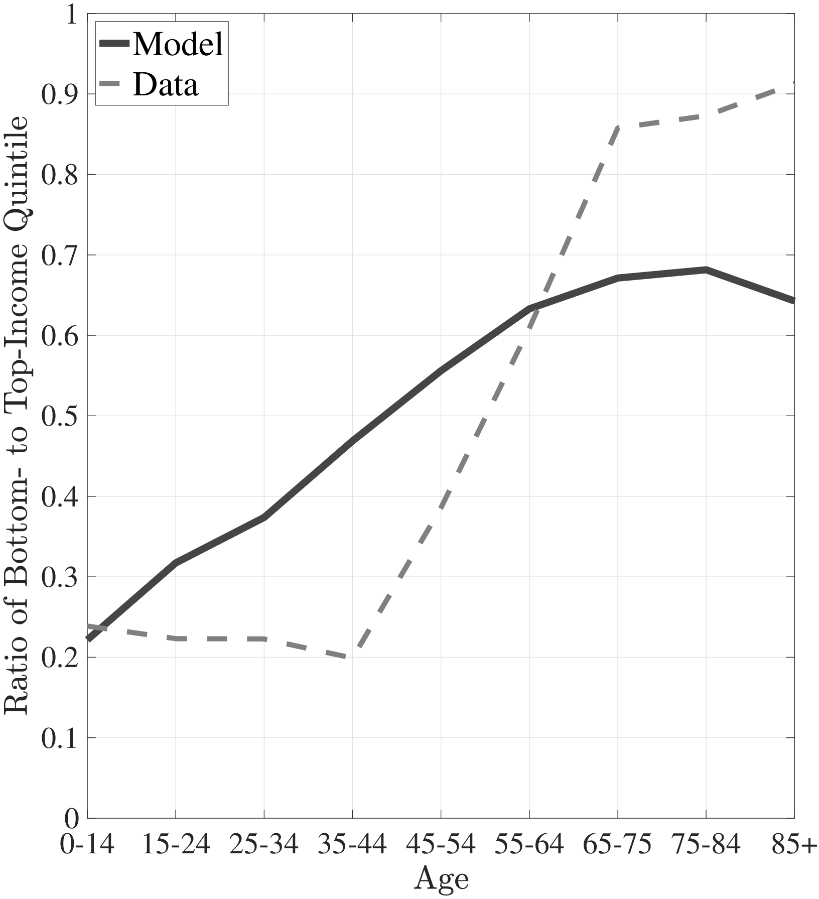
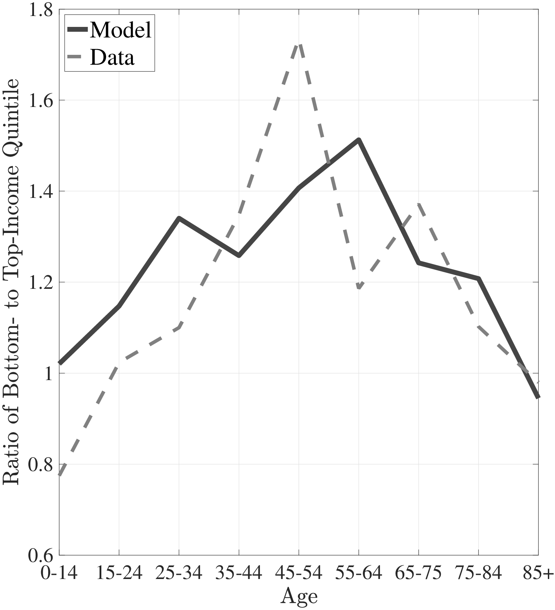
Notes: This figure shows the ratio of average of bottom 50% medical expenditures of bottom- to top-income quintile groups for model simulated data along with empirical counterpart. The right panel shows the ratio of average of top 10% medical expenditures of bottom- to top-income quintile groups for model simulated data along with empirical counterpart.
Table 3 shows three selected aggregate statistics in the data and their model counterparts. First, the model results suggest that 85% of the population under age 65 is covered by private insurance, whereas in the data this number is only 73%. This is because of the lack of public insurance channels for adults between ages 21 and 65 in the model. Thus, the only option for adults is to buy private insurance, which leads to higher ratios of private insurance coverage in the adult population. Second, the model implies a rate of Medicaid coverage of 23% for children under age 20, which is very close to the figure I document from the data, 22%. Last, out of total medical expenditures the share of Medicaid and Medicare in the data is 29% versus 26% in the model. These results suggest that the model is fairly successful in fitting the data.
| Data | Model | |
| Private Insurance Coverage under age 65 | 73% | 85% |
| Medicaid Coverage under age 20 | 22% | 23% |
| Share of Medicaid and Medicare | 29% | 26% |
Data source: Author’s calculations from the MEPS and the model simulations.
5.3 Rising Inequality and Widening Health Disparities
Income inequality in the United States has experienced a dramatic rise since the late 1970s (e.g., Piketty and Saez (2003)). Concurrently, the disparity in life expectancy between income groups has also widened (e.g., Case and Deaton (2021)). As I explained above, my model generates a significant life expectancy gap between the bottom and the top income quintiles. In this section, I use the estimated model to investigate the potential role of increasing inequality in exacerbating the life expectancy gap in the US. Guvenen et al. (2022) use administrative data to argue that a substantial fraction of the rise in lifetime inequality for men can be attributed to a more than two-fold rise in inequality in the beginning of working life. Therefore, I model the increase in earnings inequality by (conservatively) doubling the variance of the individual-specific fixed effects, \(\sigma _{\alpha}^{2}\), from 0.24 to 0.48 (and keeping the average earnings constant).
Because of higher inequality, low-income individuals spend less on preventive care, which results in a significant decrease in the share of preventive care expenditures, from 21.5% of total medical spending to 18.5% (Table 4).2626As a result, in the more-unequal economy, the ratio of medical expenditures between the bottom- and top-income quintiles exhibits a steeper increase compared to the benchmark economy. As a result, the bottom two lifetime earnings quintiles see their life expectancy decline by around 1.8 years. Individuals above median income experience a very slight improvement in their life expectancy. Thus, overall life expectancy declines in the higher-inequality (steady-state) economy. The larger life expectancy gap is roughly consistent with empirical estimates. For example, Chetty et al. (2016) document that between 2001 and 2014, the gap in life expectancy at age 40 between bottom- and top-income quartiles has increased more than 1.5 years.
While aggregate medical expenditures decline slightly, from 9.84% of aggregate income to 9.82%, because of the shorter life span, per capita healthcare expenses increase from $4,750 to only $4,805. Furthermore, the share of medical expenditures paid by Medicare also increases from 2.48% to 2.56%. These results suggest that the changes in the distributions of health shocks due to rising inequality is a substantial source of the widening life-expectancy gap. Therefore, increasing income inequality has welfare consequences other than consumption inequality (see also De Nardi et al. (2017)).
6 Policy Analysis
The model is quite successful in matching the salient features of the data. This encourages me to use the model as a laboratory to study the macroeconomic and distributional effects of some healthcare policies, such as the ACA.
6.1 Policy I: Universal Health Insurance
Expanding health insurance coverage has always been at the center of the public debate to address health disparities in the US. For example, the ACA expands Medicaid eligibility, subsidizes private health insurance for low-income individuals, provides incentives for employers to offer health benefits, and imposes tax penalties on individuals who do not obtain health insurance.2727Keisler-Starkey et al. (2023) find that less than 8% of the population was uninsured in 2022. The uninsured consists of low-income individuals who are eligible for Medicaid but do not enroll in it and young single adults who prefer to pay a penalty instead of buying health insurance. These provisions are financed by taxes, fees, and cost-saving measures.
| Bench. | Higher | Policy I | Policy II | |
| Inequality | UHI | |||
| Change in Average Tax Rate | – | – | +3.1% | +4.06% |
| Health Spending % of Income | 9.84% | 9.82% | 9.92% | 9.92% |
| Health Spending/Capita | $4,750 | $4,805 | $4,755 | $4,738 |
| Medicare Expenditures | 2.48% | 2.56% | 2.495% | 2.42% |
| Preventive Spending % of Total Spending | 21.5% | 18.5% | 21.7% | 38.5% |
| Change in Welfare | – | – | 1.5% | 2.5% |
Notes: Selected aggregate statistics from model simulated data for several versions. The first column corresponds to the benchmark calibration. In the second column, I double the variance of individual fixed effect. Third column corresponds to the universal health insurance economy. The last column incorporates 75% reimbursement for preventive care in the universal health insurance economy.
I use my model to evaluate the macroeconomic implications of expanding insurance coverage to the whole population, universal health insurance (UHI). In the counterfactual model the government pays for the private health insurance premiums of all non-elderly individuals, which can be thought of as medical vouchers. The cost of this provision is offset by a proportional income tax that keeps government expenditures net of transfers the same as before the policy change. In particular, the government budget constraint (equation (B.1)) is satisfied by increasing tax rates, \(\tau (.)\), proportionally to income to keep government expenditures, \(G\), constant. This exercise should be viewed as a first step to understanding the impact of the universal health insurance by taking into account the changes in the distribution of health shocks due to policy change.
Table 4 shows some selected aggregate statistics for the benchmark model (in the column labeled “Bench.”) and their steady-state values after the policy change (in the column labeled “Policy I”). To finance the universal health insurance policy, the government imposes an additional 3.1% flat tax on income. Since the new policy provides access to health insurance for low-income individuals, they invest more in both preventive and physical health capital; therefore, on average, they live longer by 1.25 years (see Table 5).2828The model predicts a higher mortality gap between the rich and the poor in the US compared to other developed countries where universal health insurance is provided. Delavande and Rohwedder (2008) use subjective survival probabilities to show a significantly larger life expectancy gap between the lowest- and highest-wealth terciles in the US than in European countries. The gap in the probability of surviving to age 75 is 14% in the US, whereas in European countries it is only 8%.
The increase in preventive expenditures and curative expenditures due to a longer life span exceeds the savings in curative expenditures due to milder health shocks. As a result, aggregate medical expenditures increase slightly, from 9.84% of aggregate income to 9.92%.2929The change in total income is negligible (a 0.2% decline) because the slight increase in labor earnings due to better health outcomes is offset by a decrease in asset income. Under the new policy individuals accumulate less capital because of better social insurance opportunities and the redistribution. However, because of the longer life span per capita healthcare expenses increase even less, from $4,750 to only $4,755. Similarly, due to the longer life span Medicare expenditures rise slightly, from 2.48% of aggregate income to 2.50%. Furthermore, the share of preventive care expenditures does not change significantly (it rises from 21.5% to only 21.7%).
| Q1 | Q2 | Q3 | Q4 | Q5 | |
| Benchmark | 71.95 | 75.2 | 76.3 | 76.5 | 76.8 |
| Policy I (UHI) | 73.2 | 75.3 | 76.3 | 76.5 | 76.8 |
| Policy II | 74.65 | 75.9 | 76.5 | 76.6 | 76.8 |
Note: This table shows life expectancy at birth for 5 lifetime earnings quintiles. The top row corresponds to the benchmark calibration. The middle row corresponds to the universal health insurance economy. In the last row I incorporate 75% reimbursement for preventive care in the universal health insurance economy.
Including low-income individuals in the insurance pool has ambiguous effects on insurance premiums. On the one hand, the poor spend less on preventive medicine compared to the rich, which, in turn, lowers health insurance premiums. On the other hand, they are subject to larger health shocks, which raise insurance premiums. As a result, the health insurance premiums of individuals younger than 30 decrease by 2.5%. However, the government pays 1.5% more for individuals older than 30 compared to the benchmark case.
In addition, I compute the change in the welfare of society due to universal health insurance, which is basically a redistributive policy. On the one hand, it increases the welfare of the poor by providing them health insurance at the relatively low cost of an increase in taxes. On the other hand, it reduces the welfare of the rich through higher tax rates. To quantitatively evaluate the net increase in social welfare, I compute the fraction of lifetime consumption that an unborn individual would be willing to give up in order to live in an economy with universal health insurance instead of in the benchmark economy. Let \((1-\phi)\) be this fraction; then \(\phi\) solves the following equation:
{t=1}^{T}{t-1}s(h_{t}{B}-{t})u(c_{t}{B},h_{t}{B}-{t})={t=1}^{T}{t-1}s(h_{t}{P}-{t})u(c{t}{P},h_{t}{P}-_{t}) where \(\{c_{t}^{B},h_{t}^{B}\}\) and \(\{c_{t}^{P},h_{t}^{P}\}\) denote the optimal consumption and physical health capital in the benchmark economy and in the economy with universal health insurance, respectively.
An unborn individual (who does not know what family she will born into) would be willing to give up 1.5% of her lifetime consumption to live with universal health insurance instead of in the benchmark economy. Around one-third of the welfare gains are due to the increase in the lifetime expectancy of the bottom first- and second-income quintiles. The rest comes from better opportunities for insurance against health shocks and redistribution.
| Bottom 2% | Median | Top 2% | |
| Policy I w.r.t Benchmark | 0.6% | 2.1% | -0.88% |
| Policy II w.r.t Benchmark | 0.35% | 3.13% | -1.2% |
| Policy II w.r.t Policy I | -0.24% | 1.105% | -0.29% |
Note: This table shows shows the welfare gains and losses in terms of percentage of lifetime consumption individual would be willing to give up in favor of the policy in question.
As expected, welfare gains are not evenly distributed and not even every newborn child is better off under the new policy (Table 6). People who are born into median-income households gain most from this policy; they are willing to give up 2.1% of their lifetime consumption to live under the new policy. The welfare of newborns of very rich families (in the top 2%) worsens since they expect to cover most of the cost of universal health insurance over their life time without gaining much in insurance (\(1-\phi =-0.88\%\)). Surprisingly, the welfare gains for children of low-income households are very small (\(1-\phi =0.6\%\)). This is because curative medicine expenditures constitute the majority of their medical expenditures and the option of default in case of a severe health shock is not as costly for them as it is for middle-income individuals. Thus, additional insurance against health shocks from a universal health coverage policy is not as valuable to them as it is to a child of a middle-income household.
Please note that in my model labor supply is inelastic; thus, higher tax rates do not lead to a distortion in labor supply, which would reduce the welfare gains. Therefore it is not surprising that this policy is welfare improving since it is redistributive in nature, transferring income from the rich to the poor. On the other hand, this way of financing universal health insurance is based on an assumption to simplify the complicated changes in the law. In reality the tax burden on high-income individuals will be small compared to this hypothetical exercise, since only a small part of the population will need a subsidy to buy insurance. Furthermore, it is important to note that in the benchmark economy, private health insurance premiums vary with age. However, in reality, most working-age individuals covered by employer-based insurance pay age-invariant premiums, effectively creating a cross-subsidy from younger—who have relatively higher marginal utility of consumption (MUC)—to older workers with lower MUC. So, if insurance premiums were age-invariant, the counterfactual policy would further improve welfare by taxing older workers (who have higher incomes) more than younger ones to finance the UHI.
Universal health insurance in my model features relatively high deductible ($722) and low copay (4.5%). Therefore, it promotes over-reliance on large curative care—which are mostly covered by the insurance—compared with relatively cheap preventive spending, which are usually below deductible threshold in the absence of large curative expenditures. In the next counterfactual analysis, I analyze a counterfactual policy that directly subsidizes preventive care expenditures.
6.2 Policy II: Free Preventive Medicine
Under the ACA, private insurance firms are required to provide basic preventive care free of charge, including childhood immunizations, checkups, mammograms, colonoscopies, cervical screenings, and treatment for high blood pressure.3030Other examples are diabetes and cholesterol tests; counseling on quitting smoking, losing weight, eating healthfully, treating depression, and reducing alcohol use; routine vaccinations against measles, polio, or meningitis; flu and pneumonia shots; counseling, screening, and vaccines to ensure healthy pregnancies; regular well-baby and well-child visits, from birth to age 21, etc. However, patients are still required to pay co-payments for doctor visits, and not all preventive care is free. Thus, I study the effect of this policy change by assuming that on top of the current private insurance scheme, firms pay 75% of individuals’ preventive medicine expenditures. I examine this policy in the presence of universal health insurance (otherwise many of the low-income individuals drop out of the health insurance market due to the rise in health insurance premiums).
The results of this policy change are reported in Tables 4 and 5 under the heading “Policy II.” An immediate implication of the new policy is an increase in insurance premiums due to higher coverage of preventive medicine costs by firms. As a result, the government raises the flat tax from 3.1% to 4.06% to finance the rise in premiums. Under this new policy, individuals spend more on preventive care, which results in a significant increase in the share of preventive care expenditures, from 21.7% of total medical spending to 38.5%. This also leads to an improvement in life expectancy for all income groups except the top income quintile, who has already maxed out their preventive investment (Table 5).
Surprisingly, even though individuals spend more on preventive care, and they live longer on average, aggregate medical spending does not change (it remains at 9.92% of total income) compared to the universal health insurance coverage economy (Policy I). This is due to the milder distribution of health shocks in the new economy because of the greater investment in preventive health capital. As a result, total Medicare spending decreases by 0.075% of total income, from 2.495% to 2.42%, and per capita medical expenditures decrease slightly, from $4,755 to $4,738.
I also compute the welfare change for this counterfactual policy experiment: An unborn individual would be willing to give up 2.5% of her lifetime consumption to live under this new policy instead of in the benchmark economy, which implies a 1% welfare gain compared to the economy with the universal health insurance. In this case, most of the welfare gain is due to the increase in life expectancy (around 60% of the 2.5% gain).
Again, welfare gains are highest for the newborn children of median individuals. However, under the “free preventive medicine” policy, it is not just the newborn children of families in the top 2% of the income distribution who are worse off, but also the children in the bottom 2%, as compared to an economy with only universal health insurance (last row of Table 6). This counterintuitive outcome stems from the poor’s limited increase in preventive health investment, even under the “free preventive medicine” policy. Because the expected marginal utility of consumption is so high for them, even with a 75% subsidy they increase preventive medicine consumption only modestly. Consequently, the subsidy they receive fails to offset their increased tax burden.3131So, there is further room for welfare improvement by financing this policy more progressively. Moreover, this modest uptake means they do not fully close the life expectancy gap with those above the median income. These results suggest that while encouraging the poor use health care early in life can generate substantial health gains without increasing overall health care expenditures significantly, optimal policy design should take into account their overall dismal living standards.
Please also note that I am simply comparing two steady-state economies, before and after the policy change. It is computationally infeasible to solve for the transitional dynamics between two steady states. Yet, I can speculate about the possible evolution of the economy after the policy change. We would expect aggregate medical costs to increase in the short term, since the elderly would not be affected by the new policy, but only the young, who would react to this policy by increasing their spending on preventive care without experiencing an immediate substantial decline in curative medicine expenditures. Thus, from a political economy point of view, the elderly would not support this policy change, since it would only imply an increase in tax rates for them.
Related Empirical Literature. These results point to avoidable health conditions due to lower investment in preventive health by the poor in the US. Nolte and McKee (2007) show that the US healthcare system performs particularly poorly in prevention, ranking last among 19 peer countries in forestalling preventable deaths through timely and effective care. My model implies a steeper increase in medical expenses over the life cycle in the US relative to the peer countries, a prediction supported by Hagist and Kotlikoff (2005). Moreover, the National Healthcare Disparities Report (2003) highlights that avoidable health conditions disproportionately affect individuals of lower socioeconomic status in the US. For example, poor individuals with diabetes are less likely to receive recommended diabetic services in the early stages of the disease, resulting in a higher likelihood of hospitalization. Furthermore, low-income patients have higher rates of hospitalization for conditions that can be avoided in the presence of comprehensive primary care.
Kolstad and Kowalski (2012) investigate the impact of the Massachusetts law mandating individuals to obtain health insurance on hospital usage and preventive care. They find evidence of reduced hospitalizations for preventable conditions and no increase in medical spending growth after the reform in Massachusetts compared to other states. Miller et al. (2021) exploit variation across states in optional Medicaid expansion provided in the ACA. Specifically, while prior to the ACA expansions, mortality rates across expansion and nonexpansion states trended similarly, they find that with the introduction of the policy, states that opted to expand have seen a decline in mortality relative to nonexpanders. Other studies exploited similar variation to find that the ACA allows for better treatment of chronic conditions for low-income non-elderly due to their higher prescription drug utilization (Ghosh et al. (2019)), leads to earlier detection and treatment of treatable cancers (Eguia et al. (2018)), and increases use of certain forms of preventive care and improves health (Simon et al. (2016)). These empirical results align with my quantitative findings. See Gruber and Sommers (2019) for a comprehensive review of the literature on the impacts of the ACA on patients and the economy.
7 Conclusion
This paper has examined the disparities in health outcomes and healthcare usage between low- and high-income individuals in the US. Using data from the MEPS, I show that while the rich spend more on health care early in life, from midway through life until old age, the average medical spending of the poor exceeds that of the rich in absolute terms. Furthermore, low-income individuals are less likely to incur any medical expenditures in a given year, yet, when they do, their expenses are prone to be extreme.
To explain these facts, I estimate a structural life-cycle model of two distinct types of health capital with endogenous distribution of health shocks. Early in life, high-income individuals spend more on preventive care and, in turn, as a cohort grows older, their health shocks grow milder compared to those of the poor. Public insurance in old age (through Medicare, Medicaid, or the option to default on medical expenditures) amplifies this mechanism by hampering the incentives of the poor to spend on preventive care. Furthermore, it allows the poor to incur medical expenditures in amounts larger than their resources and larger than the medical spending of the rich. The model can also explain the widening life expectancy gap in response to rising income inequality. Counterfactual policy experiments suggest that policies encouraging the use of health care by the poor early in life produce significant welfare gains, even when fully accounting for the increase in taxes required to pay for them. These findings highlight the importance of policies that promote access to health care and preventive care among disadvantaged groups.
This paper contributes to the growing literature on the relationship between income and health and the macroeconomic implications of health and healthcare policies. The ACA is one of the most influential healthcare reforms in our recent history. It will surely have large effects on people’s healthcare behavior, which, in turn, will affect the dynamics of health shocks. To study such large policy changes, a model with endogenous dynamics of health shocks is needed. My findings underscore the critical role of preventive health care as a key determinant of the timing and size of health shocks. Yet, it is well known that there are several other factors affecting an individual’s health, such as lifestyle choices, dietary behavior, environmental factors, or genetic predispositions (e.g., Cole et al. (2019); Margaris and Wallenius (2023); Bueren et al. (2024)). This paper is a stepping stone in modeling the determinants of the distribution of health shocks, and future research could extend my framework to incorporate these additional factors.
During the preparation of this work the author used Claude LLM in order to improve language and readability. After using this tool, the author reviewed and edited the content as needed and takes full responsibility for the content of the publication.
8 References
Aizer, A., 2003. Low take-up in medicaid: does outreach matter and for whom? American Economic Review 93, 238–241.
Attanasio, O., Kitao, S., Violante, G.L., 2008. Financing medicare: A general equilibrium analysis. Working Paper.
Attanasio, O.P., Emmerson, C., 2003. Mortality, health status, and wealth. Journal of the European Economic Association 1(4), 821–850.
Bueren, J., Amengual, D., Pijoan-Mas, J., 2024. Education, Healthy Habits, and Inequality. Working papers. CEMFI.
Case, A., Deaton, A., 2021. Life expectancy in adulthood is falling for those without a ba degree, but as educational gaps have widened, racial gaps have narrowed. Proceedings of the National Academy of Sciences 118, e2024777118.
Chetty, R., Stepner, M., Abraham, S., Lin, S., Scuderi, B., Turner, N., Bergeron, A., Cutler, D., 2016. The association between income and life expectancy in the united states, 2001-2014. Jama 315, 1750–1766.
Cole, H.L., Kim, S., Krueger, D., 2019. Analysing the effects of insuring health risks: On the trade-off between short-run insurance benefits versus long-run incentive costs. The Review of Economic Studies 86, 1123–1169.
Cristia, J.P., 2007. The Empirical Relationship Between Lifetime Earnings and Mortality. Working papers 11. Congressional Budget Office.
Cutler, D.M., Richardson, E., 1997. Measuring the health of the u.s. population. Brookings Papers on Economic Activity, Microeconomics, 217–282.
De Nardi, M., French, E., Jones, J.B., 2010. Why do the elderly save? the role of medical expenses. Journal of political economy 118, 39–75.
De Nardi, M., French, E., Jones, J.B., Gooptu, A., 2011. Medicaid and the elderly. NBER Working Paper 17689.
De Nardi, M., Pashchenko, S., Porapakkarm, P., 2017. The lifetime costs of bad health. Technical Report. National Bureau of Economic Research.
Deaton, A., Paxson, C., 1999. Mortality, education, income and inequality among american cohorts. NBER Working Paper.
Delavande, A., Rohwedder, S., 2008. Differential mortality in europe and the u.s.: Estimates based on subjective probabilities of survival. RAND Labor and Population Working Paper.
Eguia, E., Cobb, A.N., Kothari, A.N., Molefe, A., Afshar, M., Aranha, G.V., Kuo, P.C., 2018. Impact of the affordable care act (aca) medicaid expansion on cancer admissions and surgeries. Annals of surgery 268, 584–590.
Fang, H., Gavazza, A., 2007. Dynamic inefficiencies in employment-based health insurance system: Theory and evidence. NBER Working Paper No: 13371.
Fang, H., Krueger, D., 2022. The affordable care act after a decade: Its impact on the labor market and the macro economy. Annual Review of Economics 14, 453–494.
Finkelstein, A., McGarry, K., Sufi, A., 2005. Dynamic inefficiencies in insurance markets: Evidence from long-term care insurance. NBER Working Paper 11039.
Ghosh, A., Simon, K., Sommers, B.D., 2019. The effect of health insurance on prescription drug use among low-income adults: evidence from recent medicaid expansions. Journal of health economics 63, 64–80.
Gruber, J., Sommers, B.D., 2019. The affordable care act’s effects on patients, providers, and the economy: what we’ve learned so far. Journal of Policy Analysis and Management 38, 1028–1052.
Guvenen, F., Kaplan, G., Song, J., Weidner, J., 2022. Lifetime earnings in the united states over six decades. American Economic Journal: Applied Economics 14, 446–479.
Guvenen, F., Kuruscu, B., Ozkan, S., 2014. Taxation of human capital and wage inequality: A cross-country analysis. Review of Economic Studies 81, 818–850.
Hagist, C.D., Kotlikoff, L.J., 2005. Who’s going broke? comparing growth in healthcare costs in ten OECD countries. Technical Report.
Hall, R.E., Jones, C.I., 2007. The value of life and the rise in health spending. The Quarterly Journal of Economics 122(1), 39–72.
Health Care Financing Administration, U., 2000. A profile of medicaid chartbook 2000.
Himmelstein, D.U., Thorne, D., Warren, E., Woolhandler, S., 2009. Medical bankruptcy in the united states, 2007: Results of a national study. The American Journal of Medicine 122, 741 – 746. URL: http://www.sciencedirect.com/science/article/pii/S0002934309004045, doi:http://dx.doi.org/10.1016/j.amjmed.2009.04.012.
Hubbard, R.G., Skinner, J., Zeldes, S.P., 1994. The importance of precautionary motives in explaining individual and aggregate saving. Carnegie Rochester Series on Public Policy, 59–125.
Hubmer, J., Halvorsen, E., Salgado, S., Ozkan, S., 2024. Why Are the Wealthiest So Wealthy? New Longitudinal Empirical Evidence and Implications for Theories of Wealth Inequality. Technical Report.
Jang, Y., 2023. Credit, default, and optimal health insurance. International Economic Review 64, 943–977.
Jeske, K., Kitao, S., 2009. Us tax policy and health insurance demand: Can a regressive policy improve welfare? Journal of Monetary Economics 56, 210–221.
Jung, J., Tran, C., 2010. Medical consumption over the life cycle: Facts from a u.s. medical expenditure panel survey. Working Paper.
Kaplan, G., 2012. Moving back home: Insurance against labor market risk. Journal of Political Economy 120, 446–512.
Karahan, F., Ozkan, S., 2013. On the persistence of income shocks over the life cycle: Evidence, theory, and implications. Review of Economic Dynamics 16, 452 – 476. doi:http://dx.doi.org/10.1016/j.red.2012.08.001.
Keisler-Starkey, K., Bunch, L.N., Lindstrom, R.A., 2023. Health insurance coverage in the united states: 2022. US Census Bureau, report P60-281 9.
Kenkel, D., 2000. Prevention. Handbook of Health Economics edited by Anthony J Culyer and Joseph P Newhouse 1B, 1676–1719.
Kolstad, J.T., Kowalski, A.E., 2012. The impact of health care reform on hospital and preventive care: Evidence from massachusetts. Journal of Public Economics 96, 909 – 929. URL: http://www.sciencedirect.com/science/article/pii/S0047272712000849, doi:http://dx.doi.org/10.1016/j.jpubeco.2012.07.003. fiscal Federalism.
Krueger, D., Perri, F., 2006. Does income inequality lead to consumption inequality? evidence and theory. The Review of Economic Studies 73, 163–193.
Lin, C., Rogot, E., Johnson, N.J., Sorlie, P.D., Arias, E., 2003. A further study of life expectancy by socio-economic factors in the national longitudinal mortality study. Ethnicity and Disease 13, 240–247.
Margaris, P., Wallenius, J., 2023. Can wealth buy health? a model of pecuniary and non-pecuniary investments in health. Journal of the European Economic Association, jvad044.
Miller, S., Johnson, N., Wherry, L.R., 2021. Medicaid and mortality: new evidence from linked survey and administrative data. The Quarterly Journal of Economics 136, 1783–1829.
Mills, R.J., 2000. Health insurance coverage. U.S. Census Bureau.
Newacheck, P.W., Hughes, D.C., Stoddard, J.J., 1996. Children’s access to primary care: Differences by race, income, and insurance status. Pediatrics 97, 26–32.
Nolte, E., McKee, C.M., 2007. Measuring the health of nations: Updating an earlier analysis. Health Status 27-1, 58–71.
Ozkan, S., Song, J., Karahan, F., 2023. Anatomy of lifetime earnings inequality: Heterogeneity in job-ladder risk versus human capital. Journal of Political Economy Macroeconomics 1, 506–550.
Palumbo, M.G., 1999. Uncertain medical expenses and precautionary saving near the end of the life cycle. The Review of Economic Studies 66, No. 2, 395–421.
Pashchenko, S., Porapakkarm, P., 2013. Quantitative analysis of health insurance reform: Separating regulation from redistribution. Review of Economic Dynamics 16, 383 – 404. URL: http://www.sciencedirect.com/science/article/pii/S109420251200052X, doi:http://dx.doi.org/10.1016/j.red.2012.09.002.
Pijoan-Mas, J., Rios-Rull, J.V., 2013. Heterogeneity in Expected Longevities. Working Paper.
Piketty, T., Saez, E., 2003. Income inequality in the united states, 1913–1998. The Quarterly journal of economics 118, 1–41.
Russell, L.B., 1986. Is prevention better than cure? The Brookings Institution, Washington, DC.
Russell, L.B., 2007. Prevention’s potential for slowing the growth of medical spending.
Sanghi, S., 2020. Health inequality: Role of insurance and technological progress, in: 9th Annual Conference of the American Society of Health Economists, ASHECON.
Selde, T.M., Levit, K.R., Cohen, J.W., Zuvekas, S.H., Moeller, J.F., McKusick, D., Ross H. Arnett, I., 2001. Reconciling medical expenditure estimates from the meps and the nha, 1996. Health Care Finacing Review 23-1, 161–178.
Shorrocks, A.F., 1975. The age-wealth relationship: a cross-section and cohort analysis. The Review of Economics and Statistics 55(3), 155–163.
Simon, K., Soni, A., Cawley, J., 2016. The impact of health insurance on preventive care and health behaviors: evidence from the 2014 ACA Medicaid expansions. Technical Report. National Bureau of Economic Research.
Storesletten, K., Telmer, C.I., Yaron, A., 2000. Consumption and risk sharing over the life cycle. NBER Working Paper 7995.
VanVuren, M., 2023. Aggregate Effects of Public Health Insurance Expansion: The Role of Delayed Medical Care. Technical Report.
Viscusi, W.K., 1993. The value of risks to life and health. Journal of economic literature 31, 1912–1946.
Watson, M.R., Manski, R.J., Macek, M.D., 2001. The impact of income on children’s and adolescents’ preventive dental visits. Journal of American Dental Association 132, 1580–1587.
White, M.N., 2012. An ounce of prevention at half price: Evaluating a subsidy on health investments. Working Paper.
Yogo, M., 2007. Portfolio choice in retirement: Health risk and the demand for annuities, housing, and risky assets. SSRN Working Paper.
Supplemental Online Appendix
9 Data Appendix
9.1 Data Cleaning
I merge MEPS waves between 1996 and 2014, which provides 608,634 observations (after dropping reporting units that did not complete the survey or without a reference person of the annualized family). First, I construct a family unit as a group of individuals who share the same dwelling unit ID (duid), and yearly family ID (famidyr) in the same year.3232The MEPS has its own family units and provides annualized family size for them. I first drop (165) observations with negative annualized family size. For 16,766 individuals this annualized family size of the MEPS differs from the total number of family members found in the data. I use the latter as the family size in my analysis. I drop families whose reference person is younger than 18 years (237 observations) or the oldest member is younger than 18 years (44 observations). I construct family income as the sum of family members’ total income. I drop families whose total income is lower than 10% of the poverty threshold (11,701 observations). I finally drop 147 observations without a reference person of the annualized family. I convert income using CPI and medical expenditures using MPI to 2010 dollars.
The variables pertaining to race or education change groupings over time in the MEPS. Therefore, we simply adopt the coarsest grouping available for all years. For example, for some MEPS years “Asian” and “Native Hawaiian/Pacific Islander” were separate categories, while for earlier years the categories were combined as “Asian/Pacific Islander”. Consequently, we group all these into the “Other” category.
| Number of Observations by Gender | ||||||
| SEX | Freq. | Percent | Cum. | |||
| MALE | 285,044 | 47.8 | 47.8 | |||
| FEMALE | 311,296 | 52.2 | 100 | |||
| Total | 596,340 | 100 | ||||
| Variable | Obs | Weight | Mean | Stdev | Min | Max |
| Real total income | 596,340 | 5.4166e+09 | 26714.26 | 33908.07 | -110924.7 | 735444.1 |
| Real total expenditure | 596,340 | 5.4166e+09 | 3751.054 | 11746.26 | 0 | 2161229 |
| Real total income | 596,340 | 21557.29 | 30236.65 | -110924.7 | 735444.1 | |
| Real total expenditure | 596,340 | 3312.852 | 11186.83 | 0 | 2161229 | |
| Real family income | 596,340 | 5.4497e+09 | 71783.03 | 56920.83 | 973.199 | 832246.5 |
| Real Family Expenditure | 596,340 | 5.4497e+09 | 9484.007 | 19032.38 | 0 | 2173679 |
| YEAR | Freq. | Percent | Cum. |
| 1996 | 21,432 | 3.59 | 3.59 |
| 1997 | 32,735 | 5.49 | 9.08 |
| 1998 | 22,880 | 3.84 | 12.92 |
| 1999 | 23,805 | 3.99 | 16.91 |
| 2000 | 24,341 | 4.08 | 20.99 |
| 2001 | 32,545 | 5.46 | 26.45 |
| 2002 | 37,791 | 6.34 | 32.79 |
| 2003 | 32,910 | 5.52 | 38.31 |
| 2004 | 33,049 | 5.54 | 43.85 |
| 2005 | 32,666 | 5.48 | 49.33 |
| 2006 | 32,802 | 5.5 | 54.83 |
| 2007 | 29,901 | 5.01 | 59.84 |
| 2008 | 32,053 | 5.37 | 65.22 |
| 2009 | 35,622 | 5.97 | 71.19 |
| 2010 | 31,585 | 5.3 | 76.49 |
| 2011 | 33,734 | 5.66 | 82.14 |
| 2012 | 37,350 | 6.26 | 88.41 |
| 2013 | 35,538 | 5.96 | 94.37 |
| 2014 | 33,601 | 5.63 | 100 |
| Total | 596,340 | 100 |
9.2 Medical Expenditures
The measure of medical expenditures that I use in my analysis is total medical expenditures that can be financed by the individual, and/or the government, and/or a private insurance company, and/or other sources (hospital funds or non-profit organizations). In addition, it includes office- and hospital-based care, home health care, dental services, vision aids, prescribed medicines, etc.
To control for year, gender, and race effects, I run a Tobit regression of total medical expenditures on year, gender and race dummies along with body mass index dummies and a smoking dummy.3333Unfortunately, I cannot control for cohort and age effects simultaneously, since my sample covers only a 10-year time span, which does not allow me to observe different cohorts in an age bin. Cohort effects can change my empirical findings if they affect different income groups differently. Jung and Tran (2010) construct life-cycle profiles of medical expenditures in the MEPS after controlling for time and cohort effects simultaneously by using a seminonparametric partial linear model. They do not find much difference in time and cohort effects between low- and high-skill groups, which can be thought of as a proxy for income groups. This suggests that cohort effects would not affect my empirical findings. Remember that the MEPS has a panel dimension of two years. In my Tobin regression I only use the second year’s medical expenditures for each individual.3434Tobit regression does not allow me to control for fixed effects. In an earlier version of this paper, I estimated the year, gender, and race effects by controlling for random effects, which resulted in similar profiles.
To control for reverse causality between income and medical expenditures (health), I condition individuals on their previous year’s normalized family income. So, top and bottom income quintiles in Figure A.1 are according to family income in year \(t-1\), while the y-axis shows medical expenditures in year \(t\).
I also normalize family income with the square-root equivalence scale. Figure A.2 shows the age profile of medical expenditures for this case.
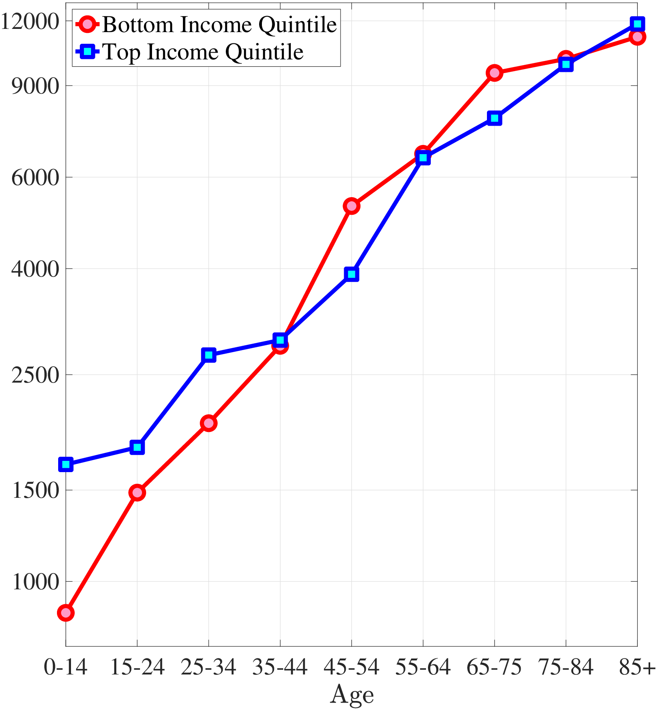
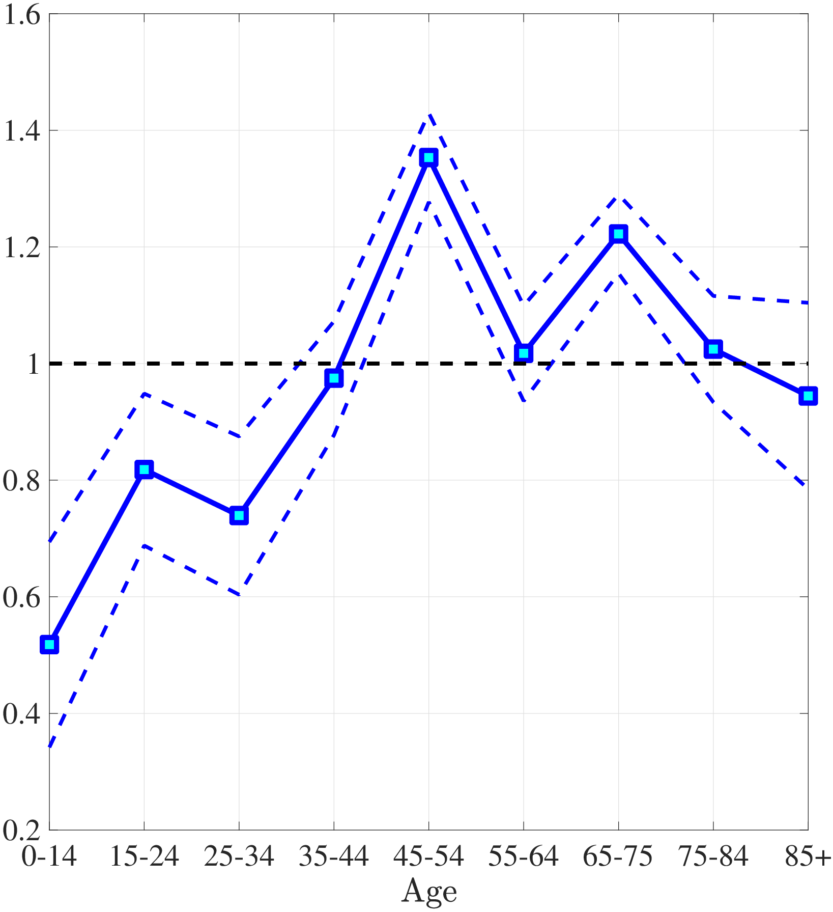
Notes: Left panel shows average medical expenditures in 2010 dollars in log scale for bottom and top income quintiles. Right panel shows ratio of average medical expenditures of bottom to top income quintile along with 95% confidence bands in dashed lines. Standard errors are estimated from 250 bootstrap samples.
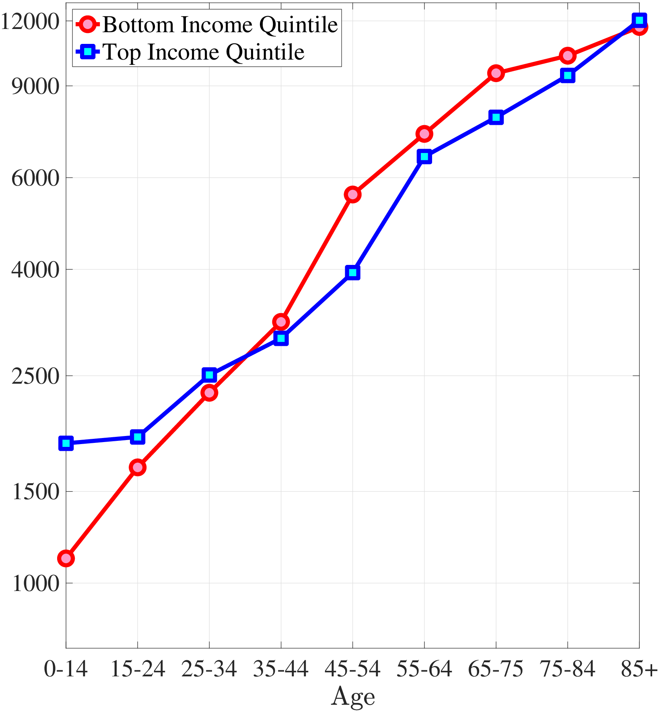
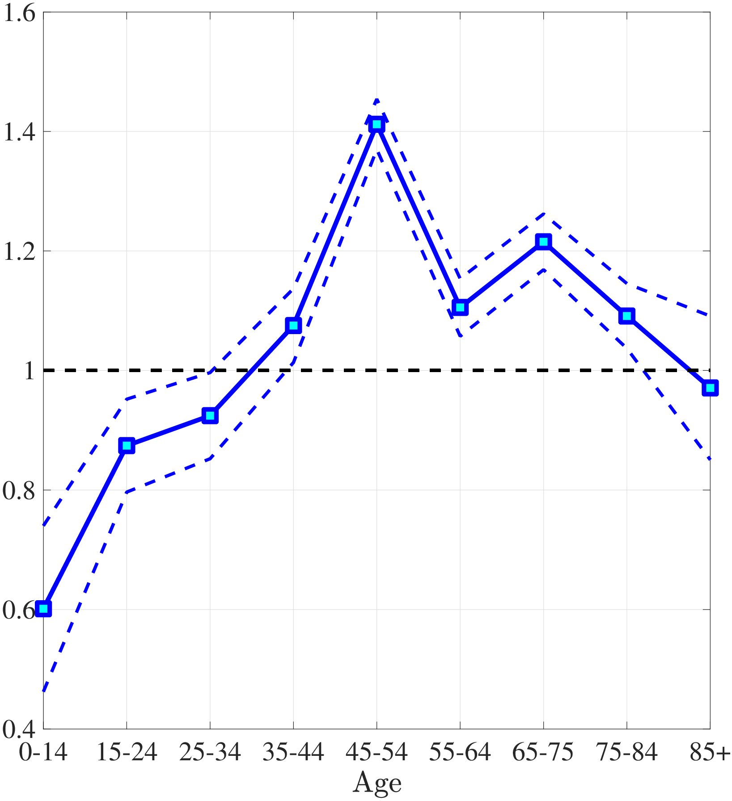
Notes: Left panel shows average medical expenditures in 2010 dollars in log scale for bottom and top income quintiles. Right panel shows ratio of average medical expenditures of bottom to top income quintile along with 95% confidence bands in dashed lines. Standard errors are estimated from 250 bootstrap samples.
Figures A.3 and A.4 show age profile of medical expenditures for males and females.
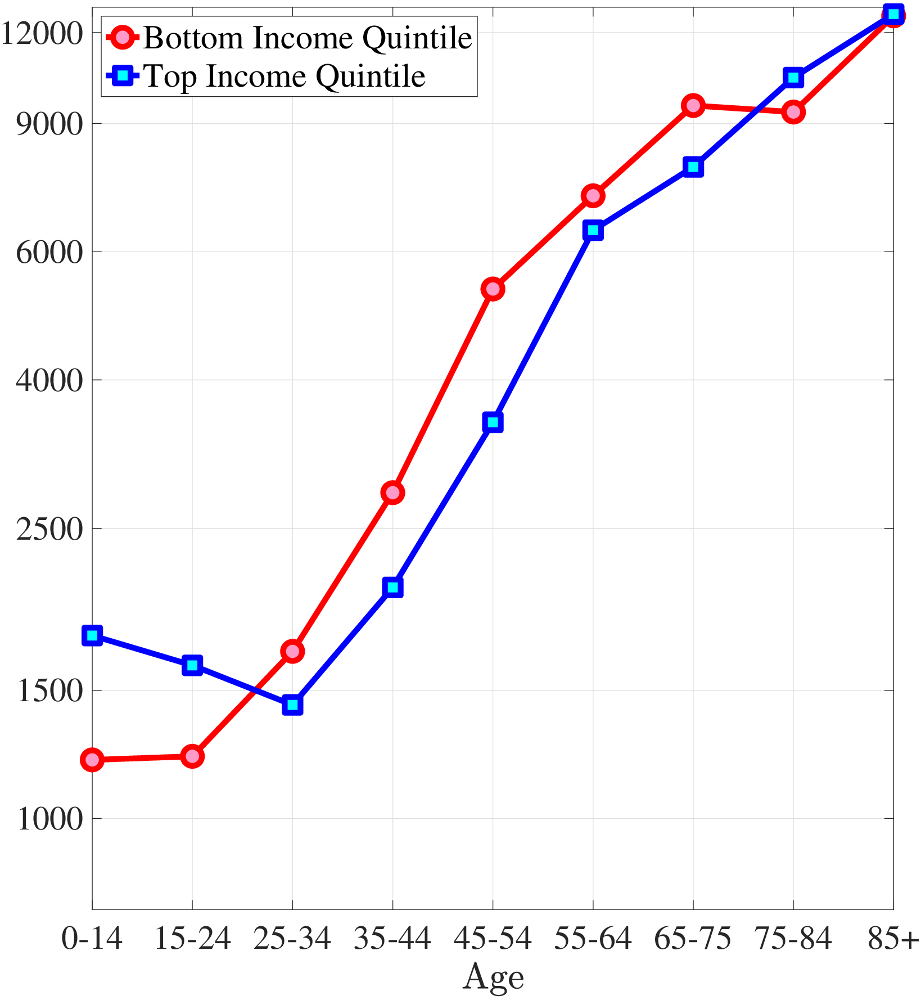
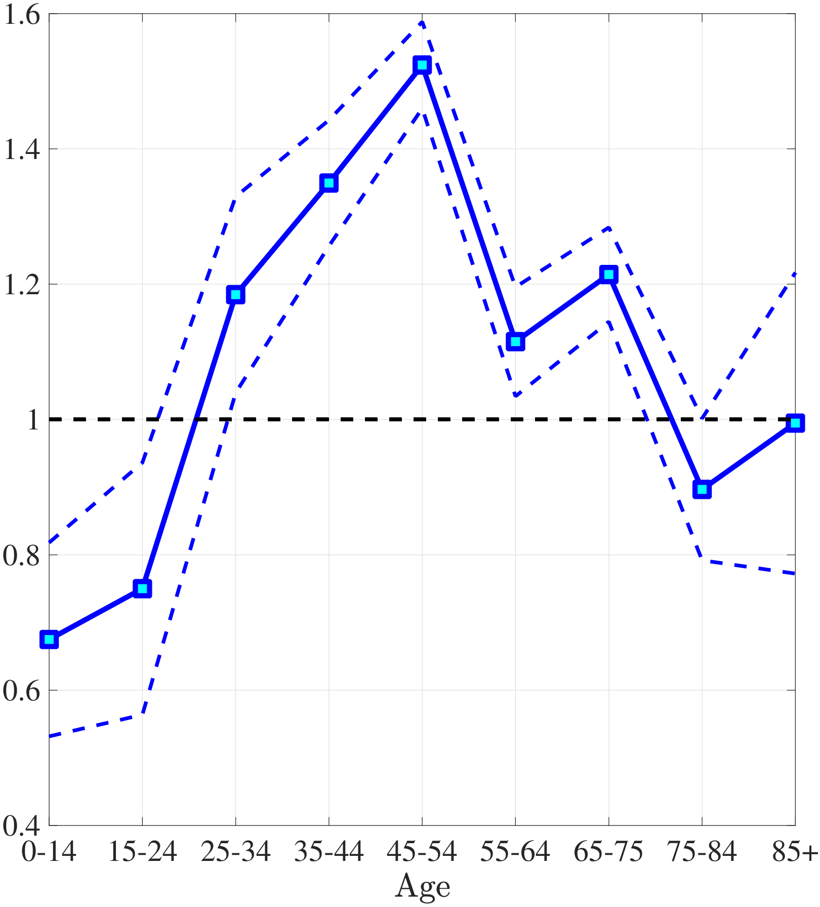
Notes: Left panel shows average medical expenditures in 2010 dollars in log scale for bottom and top income quintiles. Right panel shows ratio of average medical expenditures of bottom to top income quintile along with 95% confidence bands in dashed lines. Standard errors are estimated from 250 bootstrap samples.
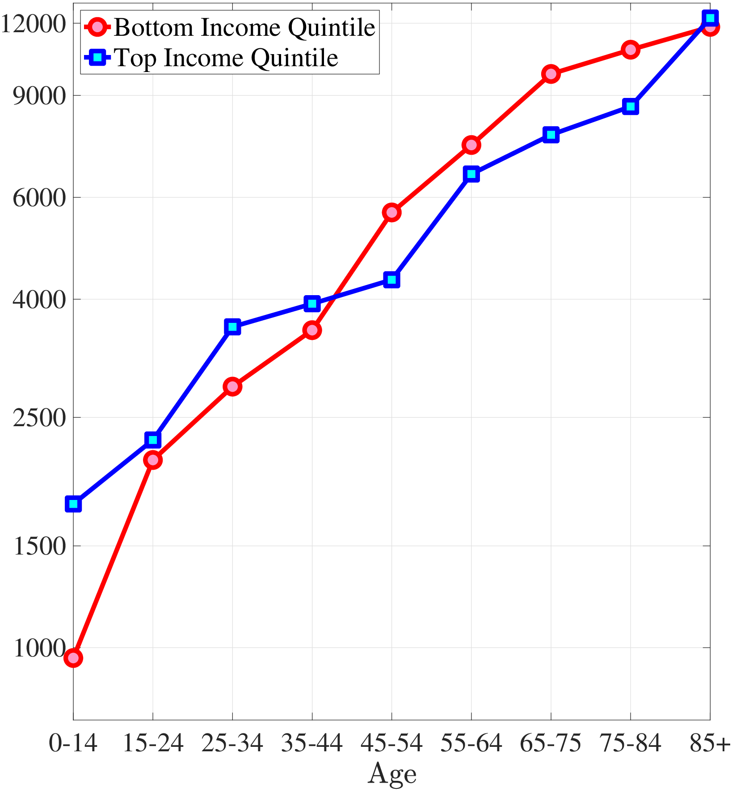
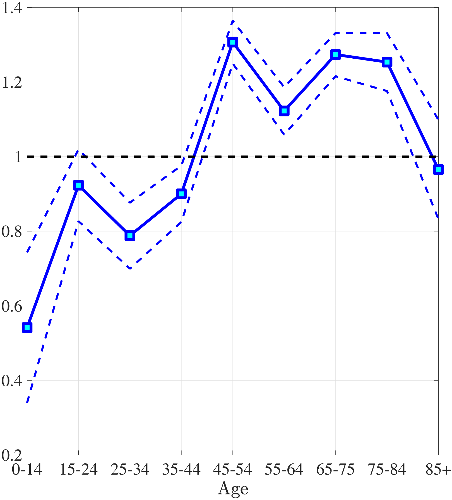
Notes: Left panel shows average medical expenditures in 2010 dollars in log scale for bottom and top income quintiles. Right panel shows ratio of average medical expenditures of bottom to top income quintile along with 95% confidence bands in dashed lines. Standard errors are estimated from 250 bootstrap samples.
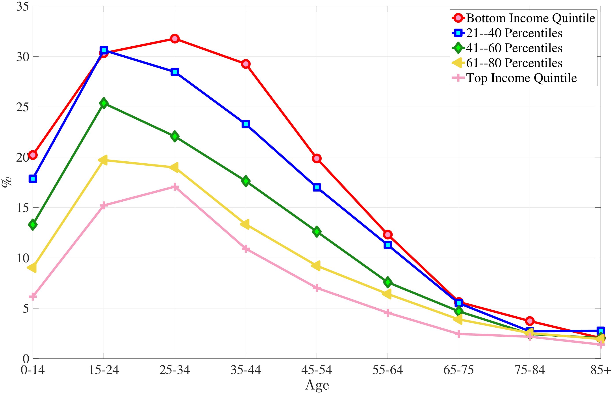
9.3 Preventive Medicine Usage
The MEPS contained a variety of categorical variables with information on frequency of a variety of medical checkups, including dental, blood pressure, cholesterol and others. These variables used a variety of different negative values to denote various kinds of missing data, such as “not ascertained”, “not applicable”, “refused”, etc. Additionally, these variables used a variety of positive values with different ranges to denote frequency of checkups, such as “twice a year or more”, “within past 5 years”, etc. We standardized these variables and provide them a intuitive interpretation by recoding all negative values as missing, and recoding all positive values to correspond to the average number of checkups per year. For instance, “twice a year or more” was recoded to be 2, “within past 5 years” was recoded to be 0.2, etc. Table A.1 shows how frequently individuals use some of the standard forms of preventive care by income group where Q1, Q2,… Q5 denote the income quintiles from lowest to highest.
| Income | Dentist | Blood | Cholesterol | Flu Shot | Regular | Pap Test | Prostate | Breast | Mammogram |
| Income | Pressure | Check up | Test | Exam | |||||
| Q1 | 0.839 | 0.838 | 0.601 | 0.370 | 0.697 | 0.632 | 0.378 | 0.665 | 0.492 |
| (0.00504) | (0.00268) | (0.00324) | (0.00325) | (0.00419) | (0.00290) | (0.00555) | (0.00329) | (0.00359) | |
| Q2 | 0.985 | 0.852 | 0.621 | 0.381 | 0.711 | 0.650 | 0.421 | 0.699 | 0.540 |
| (0.00502) | (0.00190) | (0.00300) | (0.00310) | (0.00291) | (0.00288) | (0.00534) | (0.00292) | (0.00369 | |
| Q3 | 1.160 | 0.880 | 0.654 | 0.407 | 0.747 | 0.694 | 0.483 | 0.747 | 0.591 |
| (0.00518) | (0.00170) | (0.00305) | (0.00337) | (0.00254) | (0.00301) | (0.00485) | (0.00281) | (0.00396) | |
| Q4 | 1.320 | 0.898 | 0.684 | 0.429 | 0.770 | 0.724 | 0.540 | 0.781 | 0.625 |
| (0.00507) | (0.00151) | (0.00297) | (0.00365) | (0.00264) | (0.00283) | (0.00597) | (0.00267) | (0.00383) | |
| Q5 | 1.466 | 0.911 | 0.710 | 0.470 | 0.789 | 0.750 | 0.593 | 0.810 | 0.650 |
| (0.00596) | (0.00141) | (0.00285) | (0.00462) | (0.00248) | (0.00305) | (0.00562) | (0.00265) | (0.00475) | |
| Obs. | 254445 | 175515 | 169552 | 176935 | 175222 | 92743 | 43337 | 93046 | 72777 |
Notes: This table reports the average number of times some forms of preventive care used in a year by income groups. The values in parentheses show the standard errors. The number of observations vary because I dropped inapplicable responds. Source: Author’s calculations from the MEPS.
I provide further evidence using data from the Behavioral Risk Factor Surveillance System survey by Centers for Disease Control and Prevention between 2012-2014. I create an index of total number of preventive service usage (e.g., dental visits, immunizations, mammograms, cancer screenings) by controlling for education and race. Figure A.6 shows that differences in preventive care usage between top- and bottom-income quintiles are prevalent over the life cycle.
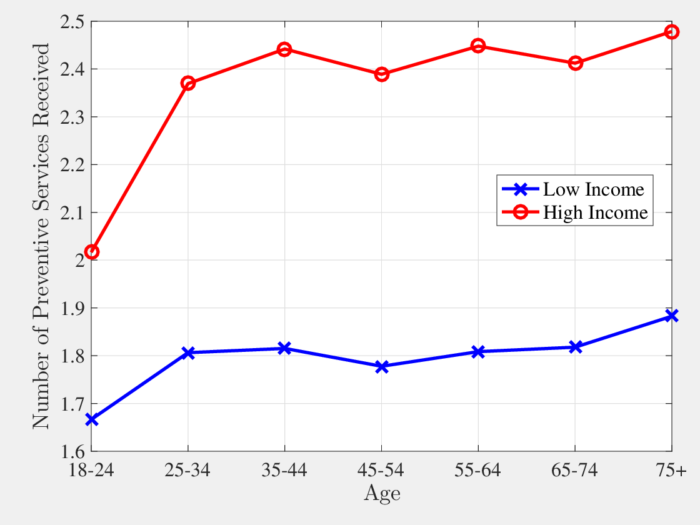
9.4 Effect of Health Status on Income
The MEPS has a panel dimension of two consecutive years, which allows me to identify the effect of health status on labor earnings. I impose more restrictions on top of the sample I use for the medical expenditure analysis. I restrict my sample to those between ages 18 and 65 who work at least 10 hours per week. Moreover, my sample excludes workers whose hourly wage is less than $2.75. I also control for year, highest educational degree, and race dummies. Health status ranges from 1 to 5 in the MEPS. So between the workers with the best and worst health status, earnings change around 44%. Table A.2 shows regression estimates.
| log(earn) | Std. Error | |
| \(HealthStatus\) | \(-0.111\) | \(0.00337\) |
| \(Age\) | \(0.295\) | \(0.00761\) |
| \(Age^{2}\) | \(-0.00578\) | \(0.000193\) |
| \(Age^{3}\) | \(3.66\times 10^{-5}\) | \(1.57\times 10^{-6}\) |
| Male | \(0.201\) | \(0.00549\) |
| Year dummies | YES | – |
| Education dummies | YES | – |
| Race dummies | YES | – |
| Number of obs. | \(133,008\) | |
| Number of Ind. | \(80,764\) |
Notes: This table reports the regression results for the effect of health on labor earnings.
9.5 Estimation of Insurance Coverage Functions
In the MEPS both the total amount of expenditures and out-of-pocket expenditures are given. Moreover, in any given period information on whether the individual is insured and the type of insurance (e.g., private, Medicaid, Medicare, etc.) is provided. Using this information I estimate insurance coverage functions for private insurance holders and Medicare holders.3535I assume that Medicaid holders are covered by private insurance. I assume the following functional form for the insurance coverage, which features both a deductible and co-payments:
(x)= \[\begin{cases} 0 & \qquad x\leq \iota \\ \varsigma (x-\iota) & \qquad x\geq \iota \end{cases}\]where \(\iota\) and \(\varsigma\) determine deductibles and co-payment rates.
For the estimation of the private insurance coverage function I exclude anyone who is not covered by private insurance for the whole year, or who is covered by any other type of insurance at any point in that particular year.3636The amount of the deductible \(\iota\) is in terms of average earnings, which are $30450.
For the estimation of the Medicare coverage function I exclude anyone who is not covered by Medicare for the whole year or who is covered by any other type of insurance at any point in that particular year.
| Private | Medicare | |
| \(\varsigma\) | 0.955 | 0.949 |
| (0.000415) | (0.00175) | |
| \(\iota\) | 0.0237 | 0.0575 |
| (0.000130) | (0.000941) | |
| Num. of Obs. | 139,300 | 12,670 |
Notes: This table reports the insurance coverage schemes for private insurance and Medicare estimated from the MEPS. The values in parentheses show the standard errors.
10 Equilibrium Definition
A stationary competitive equilibrium of this economy for given insurance coverage schemes \(\chi ^{j}()\), tax rate function \(\tau ()\), and interest rate \(r\) is a set of decision rules, \(\left \{I_{t}^{PRV}(\mathbb{S}_{t}),\,I_{t}^{D}(\mathbb{S}_{t},\omega _{t}),\,a_{t+1}(\mathbb{S}_{t},\omega _{t}),\,m_{C,t}(\mathbb{S}_{t},\omega _{t}),\,m_{P,t}(\mathbb{S}_{t},\omega _{t}),\,c_{t}(\mathbb{S}_{t},\omega _{t})\right \} _{t=1}^{T}\); value function \(\left \{V_{t}(\mathbb{S}_{t})\right \} _{t=1}^{T}\), where \(\mathbb{S}_{t}=(h_{t},x_{t},a_{t},w_{t})\); age-dependent prices for private health insurance plans \(\left \{p_{t}^{PRV}\right \} _{t=1}^{T_{RET}}\); and measures \(\left \{\Lambda _{t}(\mathbb{S}_{t},\omega _{t})\right \} _{t=1}^{T}\) such that:
- Given insurance coverage schemes \(\chi ^{j}()\), average tax rate function \(\tau ()\), risk-free interest rate \(r\), and age-dependent prices for private health insurance plans \(\left \{p_{t}^{PRV}\right \} _{t=1}^{T_{RET}}\) the decision rules and the value function solve the individual’s problem.
- The age-dependent private health insurance premium satisfies zero-profit condition: {{t}}I_{t}^{PRV}({t}){{t}}d({t},_{t})=0,,,t, where \(m_{t}(\mathbb{S}_{t},\omega _{t})=m_{C,t}(\mathbb{S}_{t},\omega _{t})+m_{P,t}(\mathbb{S}_{t},\omega _{t})\).
- \(\left \{\Lambda _{t}(\mathbb{S}_{t},\omega _{t})\right \} _{t=1}^{T}\) are stationary distributions and generated by individuals’ optimal choices.
- The government budget balances as discussed in Section 4.3:
\[ \begin{aligned} \sum _{t=T_{ADULT}+1}^{T}\int _{\mathbb{S}_{t}}\int _{\omega _{t}}\tau (w+ra_{t}-p_{t}^{PRV}I_{t}^{PRV}(\mathbb{S}_{t}))d\Lambda _{t}(\mathbb{S}_{t},\omega _{t}) & =\\ G+\sum _{t=1}^{T}\int _{\mathbb{S}_{t}}\int _{\omega _{t}}Trd\Lambda _{t}(\mathbb{S}_{t},\omega _{t}) & + \\ \sum _{t}\int _{\mathbb{S}_{t}}\int _{\omega _{t}}\chi ^{MCD}(m_{t}(\mathbb{S}_{t},\omega _{t}))I_{t}^{MCD}(\mathbb{S}_{t})d\Lambda _{t}(\mathbb{S}_{t},\omega _{t}) & + \\ \sum _{t}\int _{\mathbb{S}_{t}}\int _{\omega _{t}}\chi ^{MCR}(m_{t}(\mathbb{S}_{t},\omega _{t}))I_{t}^{MCR}(\mathbb{S}_{t})d\Lambda _{t}(\mathbb{S}_{t},\omega _{t}) & + \\ \sum _{t}\int _{\mathbb{S}_{t}}\int _{\omega _{t}}(m_{C,t}(\mathbb{S}_{t},\omega _{t})+c_{min}-y_{t}-a_{t})I_{t}^{D}(\mathbb{S}_{t},\omega _{t})d\Lambda _{t}(\mathbb{S}_{t},\omega _{t}) & + \\ \sum _{t=T_{RET}+1}^{T}\int _{\mathbb{S}_{t}}\int _{\omega _{t}}w_{t}(\mathbb{S}_{t})d\Lambda _{t}(\mathbb{S}_{t},\omega _{t}). \end{aligned} \]
The first term in the government’s budget is the total revenue collected through the tax on the total income earned by all adult agents. On the right-hand side, the government finances government expenditures, \(G\), lump-sum transfers, \(Tr\), Medicaid expenditures for eligible children, Medicare expenditures of all of the elderly, curative medicine expenditures due to default, and pension payments to retirees.
11 Estimation Results
| Param | Explanation | Value |
| Demographics | ||
| \(T\) | Life time | 110 years |
| \(T_{CHILD}\) | Childhood | 20 years |
| \(T_{RET}\) | Retirement Age | 65 |
| Income Process | ||
| \(\sigma _{\alpha}^{2}\) | Variance of Fixed effects | 0.24 |
| \(\sigma _{\eta}^{2}\) | Variance of Shocks | 0.02 |
| \(\rho\) | Persistence of Shocks | 0.98 |
| \(\zeta\) | Decrease in earnings due to health shocks | 40% |
| Private Insurance Plan/Medicaid | ||
| \(\iota\) | Deductible | $722 |
| \(\varsigma\) | Copayment | 4.5% |
| Medicare | ||
| \(\iota\) | Deductible | $1697 |
| \(\varsigma\) | Copayment | 5% |
| Miscellaneous | ||
| \(r\) | Interest rate | \(2.5\%\) |
| \(\sigma\) | CRRA coefficient | 3 |
| \(c_{min}\) | Consumption Floor | $5000 |
| \(\underbar{w}\) | Poverty Threshold | $10488 |
| Param | Explanation | Value |
| \(\beta\) | Discounting Factor | 0.98 |
| \(b\) | Value of living | 6.75 |
| \(\alpha\) | Quality of life parameter | 0.20 |
| \(\gamma\) | Quality of life parameter | 1.15 |
| Param. | Explanation | Value |
| \(\delta _{x}\) | Preventive health depreciation | 7.5% |
| \(A^{p}\) | Preventive health function productivity | 0.28 |
| \(\theta ^{C}\) | Preventive health function curvature | 0.40 |
| Age | \(A^c\) | \(\theta ^c\) | \(\mu\) | \(\sigma ^2\) | Age | \(A^c\) | \(\theta ^c\) | \(\mu\) | \(\sigma ^2\) |
| 1 | 0.15466 | 1.208109 | -7.66545 | 1.703434 | 56 | 0.035172 | 0.869485 | -5.86903 | 1.304228 |
| 2 | 0.15466 | 1.208109 | -7.66545 | 1.703434 | 57 | 0.037824 | 0.850597 | -5.74153 | 1.275895 |
| 3 | 0.15466 | 1.208109 | -7.66545 | 1.703434 | 58 | 0.040687 | 0.831646 | -5.61361 | 1.247469 |
| 4 | 0.15466 | 1.208109 | -7.66545 | 1.703434 | 59 | 0.043669 | 0.813274 | -5.4896 | 1.219912 |
| 5 | 0.15466 | 1.208109 | -7.66545 | 1.703434 | 60 | 0.046839 | 0.795076 | -5.36676 | 1.192614 |
| 6 | 0.225088 | 1.498756 | -8.83517 | 1.96337 | 61 | 0.051328 | 0.803658 | -5.24387 | 1.165304 |
| 7 | 0.225088 | 1.498756 | -8.83517 | 1.96337 | 62 | 0.054971 | 0.785102 | -5.12279 | 1.138398 |
| 8 | 0.225088 | 1.498756 | -8.83517 | 1.96337 | 63 | 0.059163 | 0.765211 | -4.993 | 1.109557 |
| 9 | 0.225088 | 1.498756 | -8.83517 | 1.96337 | 64 | 0.063836 | 0.744638 | -4.85877 | 1.079726 |
| 10 | 0.225088 | 1.498756 | -8.83517 | 1.96337 | 65 | 0.06887 | 0.724096 | -4.72473 | 1.04994 |
| 11 | 0.105945 | 1.372986 | -8.83517 | 1.96337 | 66 | 0.070566 | 0.723387 | -4.58989 | 1.019976 |
| 12 | 0.105945 | 1.372986 | -8.83517 | 1.96337 | 67 | 0.075886 | 0.703553 | -4.46405 | 0.99201 |
| 13 | 0.105945 | 1.372986 | -8.83517 | 1.96337 | 68 | 0.080979 | 0.685828 | -4.35158 | 0.967018 |
| 14 | 0.105945 | 1.372986 | -8.83517 | 1.96337 | 69 | 0.085679 | 0.670435 | -4.25391 | 0.945313 |
| 15 | 0.105945 | 1.372986 | -8.83517 | 1.96337 | 70 | 0.090209 | 0.656379 | -4.16473 | 0.925495 |
| 16 | 0.06723 | 1.363452 | -8.83517 | 1.96337 | 71 | 0.085053 | 0.641626 | -4.07111 | 0.904692 |
| 17 | 0.06723 | 1.363452 | -8.83517 | 1.96337 | 72 | 0.090303 | 0.626031 | -3.97217 | 0.882703 |
| 18 | 0.06723 | 1.363452 | -8.83517 | 1.96337 | 73 | 0.095857 | 0.610493 | -3.87358 | 0.860795 |
| 19 | 0.06723 | 1.363452 | -8.83517 | 1.96337 | 74 | 0.101654 | 0.595205 | -3.77657 | 0.839239 |
| 20 | 0.06723 | 1.363452 | -8.83517 | 1.96337 | 75 | 0.107929 | 0.57961 | -3.67762 | 0.817249 |
| 21 | 0.048962 | 1.340757 | -9.05011 | 2.011136 | 76 | 0.109543 | 0.575596 | -3.57445 | 0.794323 |
| 22 | 0.050157 | 1.330047 | -8.97782 | 1.995071 | 77 | 0.117075 | 0.558288 | -3.46697 | 0.770438 |
| 23 | 0.051328 | 1.31979 | -8.90858 | 1.979684 | 78 | 0.125372 | 0.540467 | -3.3563 | 0.745844 |
| 24 | 0.051518 | 1.318142 | -8.89746 | 1.977212 | 79 | 0.134476 | 0.52222 | -3.24299 | 0.720664 |
| 25 | 0.051224 | 1.320684 | -8.91462 | 1.981027 | 80 | 0.13901 | 0.51359 | -3.18939 | 0.708754 |
| 26 | 0.049118 | 1.313087 | -8.92243 | 1.982762 | 81 | 0.144714 | 0.510161 | -3.09923 | 0.688717 |
| 27 | 0.048987 | 1.314248 | -8.93032 | 1.984515 | 82 | 0.153016 | 0.495438 | -3.00978 | 0.668841 |
| 28 | 0.04949 | 1.309793 | -8.90004 | 1.977788 | 83 | 0.161723 | 0.480831 | -2.92105 | 0.649122 |
| 29 | 0.050613 | 1.300018 | -8.83362 | 1.963028 | 84 | 0.170853 | 0.466338 | -2.833 | 0.629556 |
| 30 | 0.052019 | 1.288079 | -8.7525 | 1.944999 | 85 | 0.18042 | 0.451958 | -2.74564 | 0.610143 |
| 31 | 0.03136 | 1.263582 | -8.6429 | 1.920644 | 86 | 0.18157 | 0.413203 | -2.65896 | 0.590881 |
| 32 | 0.032479 | 1.250788 | -8.55539 | 1.901198 | 87 | 0.19187 | 0.399839 | -2.57296 | 0.57177 |
| 33 | 0.033865 | 1.235537 | -8.45107 | 1.878016 | 88 | 0.202667 | 0.386581 | -2.48765 | 0.552811 |
| 34 | 0.035219 | 1.221228 | -8.3532 | 1.856266 | 89 | 0.213976 | 0.37343 | -2.40302 | 0.534005 |
| 35 | 0.036544 | 1.207752 | -8.26102 | 1.835783 | 90 | 0.225815 | 0.360388 | -2.31909 | 0.515354 |
| 36 | 0.030922 | 1.201206 | -8.16219 | 1.813821 | 91 | 0.240758 | 0.368044 | -2.23587 | 0.49686 |
| 37 | 0.032322 | 1.18591 | -8.05826 | 1.790724 | 92 | 0.253748 | 0.354462 | -2.15336 | 0.478524 |
| 38 | 0.033838 | 1.17007 | -7.95063 | 1.766806 | 93 | 0.267315 | 0.341 | -2.07157 | 0.460349 |
| 39 | 0.035604 | 1.152485 | -7.83113 | 1.740252 | 94 | 0.281476 | 0.327657 | -1.99052 | 0.442338 |
| 40 | 0.037395 | 1.135527 | -7.71591 | 1.714646 | 95 | 0.296248 | 0.314438 | -1.91021 | 0.424491 |
| 41 | 0.033983 | 1.117985 | -7.59671 | 1.688157 | 96 | 0.302394 | 0.301342 | -1.83065 | 0.406811 |
| 42 | 0.035874 | 1.100082 | -7.47506 | 1.661124 | 97 | 0.318369 | 0.288371 | -1.75185 | 0.389301 |
| 43 | 0.037776 | 1.083001 | -7.35899 | 1.635331 | 98 | 0.33502 | 0.275527 | -1.67382 | 0.371961 |
| 44 | 0.039635 | 1.06712 | -7.25108 | 1.611352 | 99 | 0.352363 | 0.26281 | -1.59657 | 0.354794 |
| 45 | 0.041563 | 1.051418 | -7.14438 | 1.587641 | 100 | 0.372671 | 0.248692 | -1.5108 | 0.335734 |
| 46 | 0.03328 | 1.048629 | -7.03106 | 1.562457 | 101 | 0.363518 | 0.248692 | -1.5108 | 0.335734 |
| 47 | 0.035193 | 1.031402 | -6.91555 | 1.536789 | 102 | 0.363518 | 0.248692 | -1.5108 | 0.335734 |
| 48 | 0.037154 | 1.014695 | -6.80353 | 1.511895 | 103 | 0.363518 | 0.248692 | -1.5108 | 0.335734 |
| 49 | 0.039081 | 0.999114 | -6.69906 | 1.48868 | 104 | 0.363518 | 0.248692 | -1.5108 | 0.335734 |
| 50 | 0.041253 | 0.982445 | -6.5873 | 1.463843 | 105 | 0.363518 | 0.248692 | -1.5108 | 0.335734 |
| 51 | 0.035327 | 0.978946 | -6.47573 | 1.439051 | 106 | 0.35406 | 0.248692 | -1.5108 | 0.335734 |
| 52 | 0.037538 | 0.961175 | -6.35818 | 1.412928 | 107 | 0.35406 | 0.248692 | -1.5108 | 0.335734 |
| 53 | 0.039907 | 0.943254 | -6.23963 | 1.386584 | 108 | 0.35406 | 0.248692 | -1.5108 | 0.335734 |
| 54 | 0.04249 | 0.924888 | -6.11813 | 1.359585 | 109 | 0.35406 | 0.248692 | -1.5108 | 0.335734 |
| 55 | 0.045278 | 0.906278 | -5.99503 | 1.332228 | 110 | 0.35406 | 0.248692 | -1.5108 | 0.335734 |
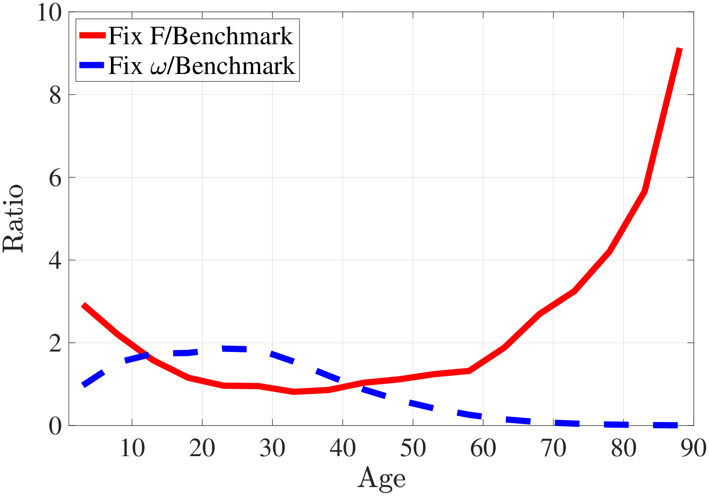
Notes: I simulate medical expenditures (for the same set of random variables) under two counterfactual cases: (i) Fix the distribution of health shocks to that of 40-year-olds and let the health production parameters vary over the life cycle. (ii) Fix the health production function to that of 40-year-olds and let the distribution of health shocks vary by age. Since our focus here is to understand the role of distribution of health shocks and health production function, I assume that health shocks are fully treated, i.e., \(\omega _{t}=A_{t}^{c}m_{C,t}^{\theta _{t}^{c}}\). Figure C.7 shows the ratio of average curative medical expenditures under these two counterfactual relative to the the average curative expenditures from benchmark calibration. The solid red line corresponds to counterfactual (i) and the dashed blue line is for case (ii).
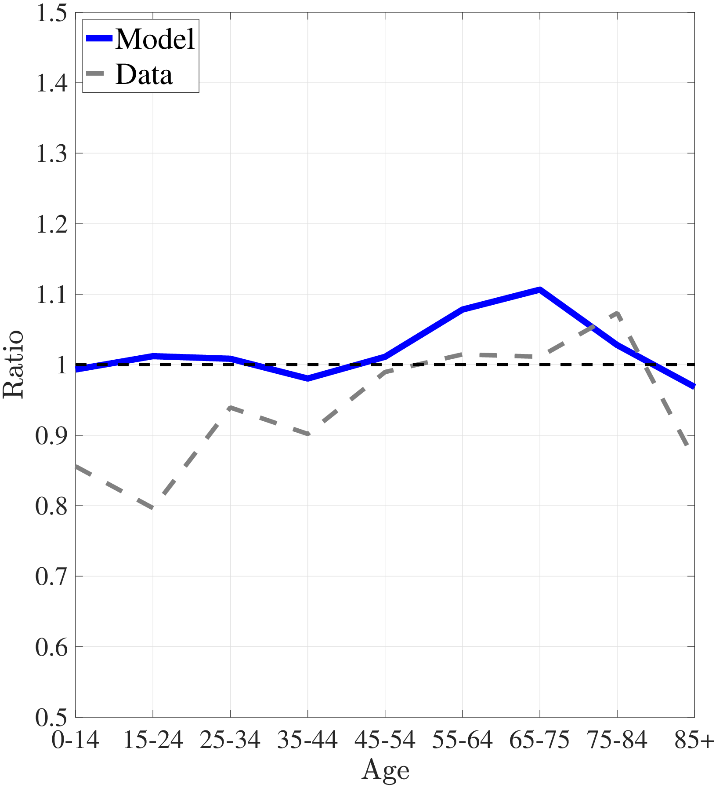
Notes: Left panel and right panels show the ratio of average medical expenditures of bottom- to top-income quintile groups and median- to top-income quintile groups, respectively.